<style>
.atoms { display: grid; grid-template-columns: repeat(4, 1fr); gap: 3mm 4mm; }
.atom { break-inside: avoid; font: 7.6pt/1.3 "Nimbus Sans", "Liberation Sans", sans-serif; }
.atom img { width: 100%; display: block; border-radius: 2mm; }
.atom img.bw { aspect-ratio: 1; object-fit: cover; } .atom .bwn { font-size: 6.4pt; color: #888; }
.atom .noicon { aspect-ratio: 1; border: 1px dashed #bbb; border-radius: 2mm; color: #999; font-size: 7pt; display: flex; align-items: center; justify-content: center; text-align: center; padding: 2mm; }
.atl { font: 7.4pt/1.3 "Nimbus Sans", "Liberation Sans", sans-serif; width: 100%; } .atl td, .atl th { padding: 1mm 1.5mm; vertical-align: top; } .tl { font-size: 9pt; margin-top: 4mm; text-align: left; caption-side: top; padding-bottom: 2mm; }
.atom .an { margin-top: 1mm; font-size: 8.4pt; } .atom .am { color: #6b5310; } .atom .ant { color: #555; font-size: 7pt; }
.atom .av { color: #6b5310; font-size: 7pt; font-style: italic; }
</style><section class="page catalogue">
<p class="chapter-mark">The DICTOnary · the catalogue</p>
<h1>All the atoms</h1>
<p>Every named shape of the work, one quantum of space each: first DICTO's numbered shapes, D1 to D193: 192 new and one known section (D85), kept under its number; then his 50 new clusters, structures and networks built from them; the 37 known or rediscovered shapes the work builds with are listed at the end of this volume. Each entry is read as set out in “How to read an entry”.</p>
<h2>DICTO's new atoms</h2>
<div class="atoms">
<div class="atom"><div class="an"><b>D1</b> DICTO skewed rhombic dodecahedron</div><div class="am">solid · <a href="https://doi.org/10.5281/zenodo.23173809">finding F1</a></div><div class="av">Volume I, Findings and apps</div><div class="ant">new member of a known family (RD parallelohedra: Fedorov 1885; Lalvani US 5,623,790, 1997)</div></div>
<div class="atom">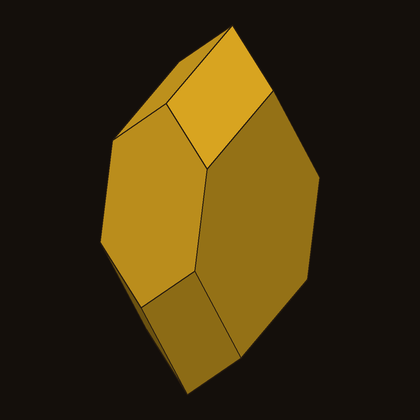<div class="an"><b>D2</b> DICTO skewed elongated dodecahedron ED F16</div><div class="am">solid · <a href="https://doi.org/10.5281/zenodo.23173809">finding F7</a></div><div class="av">Volume I, Chapter 2 (#50)</div><div class="ant">new member of a known family (ED parallelohedra: Fedorov; Lalvani US 5,623,790)</div></div>
<div class="atom">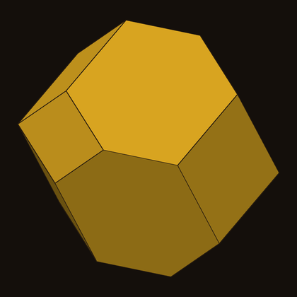<div class="an"><b>D3</b> DICTO skewed elongated dodecahedron ED F18</div><div class="am">solid · <a href="https://doi.org/10.5281/zenodo.23173809">finding F7</a></div><div class="av">Volume I, Chapter 2 (#50)</div><div class="ant">new member of a known family (ED parallelohedra: Fedorov; Lalvani US 5,623,790)</div></div>
<div class="atom"><div class="an"><b>D4</b> DICTO Jewel (EKP windows; first called Dragon Jewel)</div><div class="am">solid · <a href="https://doi.org/10.5281/zenodo.23496353">#41</a></div><div class="av">Volume I, Chapter 1</div><div class="ant">not found</div></div>
<div class="atom">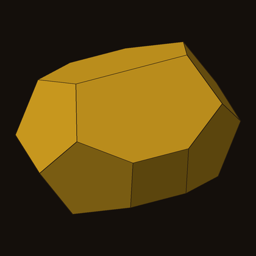<div class="an"><b>D5</b> Stretched dodecahedron</div><div class="am">solid · <a href="https://doi.org/10.5281/zenodo.23173809">finding F11</a></div><div class="av">Volume I, Findings and apps</div><div class="ant">candidate; simple construction, may appear elsewhere (crystal habits)</div></div>
<div class="atom"><div class="an"><b>D6</b> DICTO Dodeca-13 Wedge</div><div class="am">piece · <a href="https://doi.org/10.5281/zenodo.23284281">#13</a></div><div class="av">Volume I, Chapter 2</div><div class="ant">not found</div></div>
<div class="atom"><div class="an"><b>D7</b> DICTO Dodeca-13 Needle</div><div class="am">piece · <a href="https://doi.org/10.5281/zenodo.23284281">#13</a></div><div class="av">Volume I, Chapter 2</div><div class="ant">not found</div></div>
<div class="atom"><div class="an"><b>D8</b> DICTO Dodeca-13 Unit (finned unit)</div><div class="am">piece · <a href="https://doi.org/10.5281/zenodo.23284281">#13</a></div><div class="av">Volume I, Chapter 2</div><div class="ant">not found</div></div>
<div class="atom">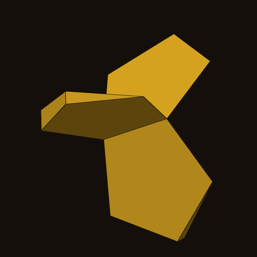<div class="an"><b>D9</b> DICTO Dodeca-13 Star</div><div class="am">piece · <a href="https://doi.org/10.5281/zenodo.23284281">#13</a></div><div class="av">Volume I, Chapter 2</div><div class="ant">not found</div></div>
<div class="atom">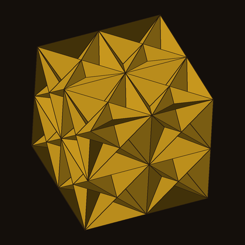<div class="an"><b>D10</b> DICTO Hexa-Key</div><div class="am">solid · <a href="https://doi.org/10.5281/zenodo.23376320">#18</a></div><div class="av">Volume I, Chapter 1</div><div class="ant">not found</div></div>
<div class="atom"><div class="an"><b>D11</b> DICTO Hexa Jewel</div><div class="am">piece · <a href="https://doi.org/10.5281/zenodo.23376320">#18</a></div><div class="av">Volume I, Chapter 1</div><div class="ant">not found</div></div>
<div class="atom"><div class="an"><b>D12</b> FUJI</div><div class="am">piece · <a href="https://doi.org/10.5281/zenodo.23351291">#19</a></div><div class="av">Volume I, Chapter 1</div><div class="ant">not a Mosseri–Sadoc tile; family in #20</div></div>
<div class="atom">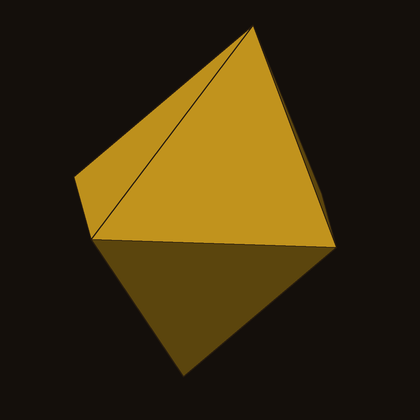<div class="an"><b>D13</b> VAJRA</div><div class="am">piece · <a href="https://doi.org/10.5281/zenodo.23351291">#19</a></div><div class="av">Volume I, Chapter 1</div><div class="ant">not found</div></div>
<div class="atom"><div class="an"><b>D14</b> King of Pentacles</div><div class="am">piece · <a href="https://doi.org/10.5281/zenodo.23351291">#19</a></div><div class="av">Volume I, Chapter 1</div><div class="ant">not found</div></div>
<div class="atom"><div class="an"><b>D15</b> Lotus Jewel (clawed icosahedron)</div><div class="am">solid · <a href="https://doi.org/10.5281/zenodo.23173809">finding F21</a></div><div class="av">not in Volume I</div><div class="ant">not found</div></div>
<div class="atom">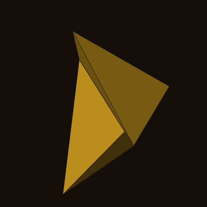<div class="an"><b>D16</b> Admiral Cap (icosahedron edge roof)</div><div class="am">piece · <a href="https://doi.org/10.5281/zenodo.23551326">#47</a></div><div class="av">Volume I, Chapter 2</div><div class="ant">DICTO&#x27;s; icosahedron + 6 caps = octahedron</div></div>
<div class="atom"><div class="an"><b>D17</b> Crown Jewel</div><div class="am">piece · <a href="https://doi.org/10.5281/zenodo.23311353">#24</a></div><div class="av">Volume I, Chapter 3</div><div class="ant">not found</div></div>
<div class="atom">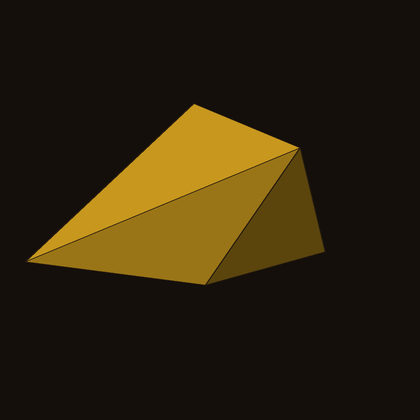<div class="an"><b>D18</b> Vajra (fine)</div><div class="am">piece · <a href="https://doi.org/10.5281/zenodo.23311353">#24</a></div><div class="av">Volume I, Chapter 3</div><div class="ant">not found</div></div>
<div class="atom">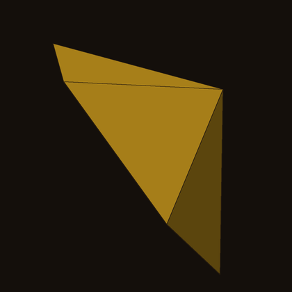<div class="an"><b>D19</b> Stupa</div><div class="am">piece · <a href="https://doi.org/10.5281/zenodo.23345502">#27</a></div><div class="av">Volume I, Chapter 3</div><div class="ant">Dharma piece name</div></div>
<div class="atom"><div class="an"><b>D20</b> Monkey Staff</div><div class="am">piece · <a href="https://doi.org/10.5281/zenodo.23345502">#27</a></div><div class="av">Volume I, Chapter 3</div><div class="ant">Dharma piece name</div></div>
<div class="atom"><div class="an"><b>D21</b> Shield</div><div class="am">piece · <a href="https://doi.org/10.5281/zenodo.23360857">#28</a></div><div class="av">Volume I, Chapter 1</div><div class="ant">pyramid on a truncated-icosahedron hexagon at the Hecatodihedron height</div></div>
<div class="atom">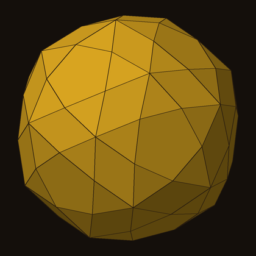<div class="an"><b>D22</b> DICTO Truncated-Icosahedral Hecatodihedron</div><div class="am">solid · <a href="https://doi.org/10.5281/zenodo.23360857">#28</a></div><div class="av">Volume I, Chapter 1</div><div class="ant">derived from a known solid (jtI with 12 five-fold corners cut flat; #28 V2); not found named</div></div>
<div class="atom">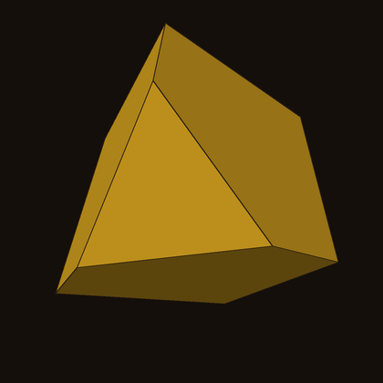<div class="an"><b>D23</b> Kion</div><div class="am">piece · <a href="https://doi.org/10.5281/zenodo.23378070">#29</a></div><div class="av">Volume I, Chapter 3</div><div class="ant">not found</div></div>
<div class="atom">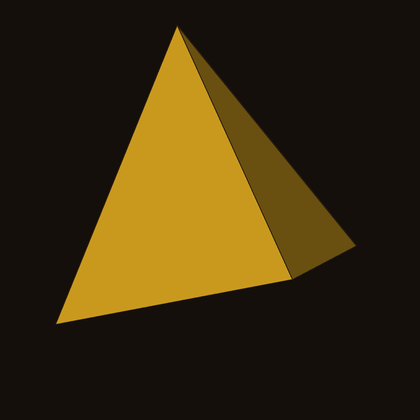<div class="an"><b>D24</b> Atraktos</div><div class="am">piece · <a href="https://doi.org/10.5281/zenodo.23378070">#29</a></div><div class="av">Volume I, Chapter 3</div><div class="ant">not found</div></div>
<div class="atom"><div class="an"><b>D25</b> Aetos</div><div class="am">piece · <a href="https://doi.org/10.5281/zenodo.23378070">#29</a></div><div class="av">Volume I, Chapter 3</div><div class="ant">not found</div></div>
<div class="atom"><div class="an"><b>D26</b> Sphen</div><div class="am">piece · <a href="https://doi.org/10.5281/zenodo.23378070">#29</a></div><div class="av">Volume I, Chapter 3</div><div class="ant">hollow split is the shadow of Klitzing K-4.137</div></div>
<div class="atom"><div class="an"><b>D27</b> Sphenion</div><div class="am">piece · <a href="https://doi.org/10.5281/zenodo.23378070">#29</a></div><div class="av">Volume I, Chapter 3</div><div class="ant">hollow split is the shadow of Klitzing K-4.137</div></div>
<div class="atom"><div class="an"><b>D28</b> DICTO Ogdoecontahedron (OG)</div><div class="am">solid · <a href="https://doi.org/10.5281/zenodo.23404688">#31</a></div><div class="av">Volume I, Chapter 1</div><div class="ant">face arrangement known (dual of L0(D), Antiprism); derived from the canonical pentakis dodecahedron (#31 V2)</div></div>
<div class="atom"><div class="an"><b>D29</b> DICTO OCD Stella</div><div class="am">solid · <a href="https://doi.org/10.5281/zenodo.23430870">#31a</a></div><div class="av">Volume I, Chapter 1</div><div class="ant">not found</div></div>
<div class="atom">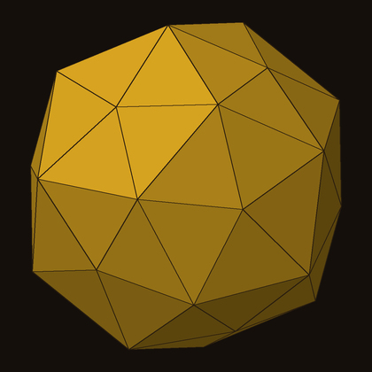<div class="an"><b>D30</b> DICTO Metaxyhexecontahedron</div><div class="am">solid · <a href="https://doi.org/10.5281/zenodo.23430864">#35a</a></div><div class="av">Volume I, Chapter 1</div><div class="ant">new as a named, distinguished member; the dodecahedron-icosahedron hull family is known</div></div>
<div class="atom"><div class="an"><b>D31</b> DICTO Palintriacontahedron</div><div class="am">solid · <a href="https://doi.org/10.5281/zenodo.23430866">#35b</a></div><div class="av">Volume I, Chapter 1</div><div class="ant">new as a named, distinguished member; the dodecahedron-icosahedron hull family is known</div></div>
<div class="atom">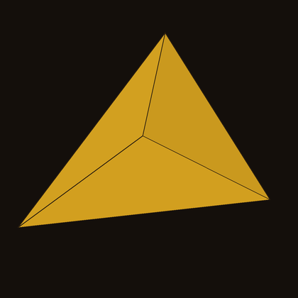<div class="an"><b>D32</b> GBPC (Golden Bodhi Pyrochlore Corner)</div><div class="am">piece · <a href="https://doi.org/10.5281/zenodo.23451210">#36</a></div><div class="av">Volume I, Chapter 2</div><div class="ant">not found</div></div>
<div class="atom"><div class="an"><b>D33</b> Bull-horns OG adaptor</div><div class="am">piece · <a href="https://doi.org/10.5281/zenodo.23451210">#36</a></div><div class="av">Volume I, Chapter 2</div><div class="ant">not found</div></div>
<div class="atom"><div class="an"><b>D34</b> Keyed octahedron (golden-key octet)</div><div class="am">piece · <a href="https://doi.org/10.5281/zenodo.23457016">#37</a></div><div class="av">Volume I, Chapter 2</div><div class="ant">not found</div></div>
<div class="atom"><div class="an"><b>D35</b> W (one-piece glue)</div><div class="am">piece · <a href="https://doi.org/10.5281/zenodo.23457016">#37</a></div><div class="av">Volume I, Chapter 2</div><div class="ant">not found</div></div>
<div class="atom">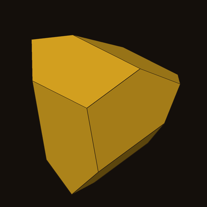<div class="an"><b>D36</b> Tetartoid core (golden envelope network)</div><div class="am">piece · <a href="https://doi.org/10.5281/zenodo.23457016">#37</a></div><div class="av">Volume I, Chapter 2</div><div class="ant">not found</div></div>
<div class="atom"><div class="an"><b>D37</b> DICTO Belted Triacontahedron (DBT)</div><div class="am">solid · <a href="https://doi.org/10.5281/zenodo.23484012">#37a</a></div><div class="av">Volume I, Chapter 2</div><div class="ant">not found</div></div>
<div class="atom"><div class="an"><b>D38</b> DICTO OTT (Octahedrally Truncated Triacontahedron)</div><div class="am">solid · <a href="https://doi.org/10.5281/zenodo.23484012">#37a</a></div><div class="av">Volume I, Chapter 2</div><div class="ant">not found (closest: Kabai 54-faced)</div></div>
<div class="atom"><div class="an"><b>D39</b> Mirror middle piece Mg</div><div class="am">piece · <a href="https://doi.org/10.5281/zenodo.23484012">#37a</a></div><div class="av">Volume I, Chapter 2</div><div class="ant">not found</div></div>
<div class="atom"><div class="an"><b>D40</b> DICTO GTI (golden truncated icosahedron)</div><div class="am">solid · <a href="https://doi.org/10.5281/zenodo.23463305">#38</a></div><div class="av">Volume I, Chapter 4</div><div class="ant">cycle and pieces not found; Bergman US 4,719,726 has octet-like shells</div></div>
<div class="atom"><div class="an"><b>D41</b> DICTO FPD (flat pentakis dodecahedron)</div><div class="am">solid · <a href="https://doi.org/10.5281/zenodo.23463305">#38</a></div><div class="av">Volume I, Chapter 4</div><div class="ant">as above</div></div>
<div class="atom">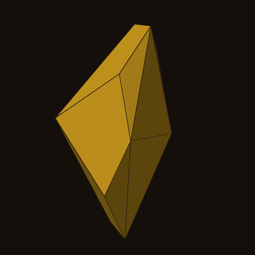<div class="an"><b>D42</b> Five-sided Vajra</div><div class="am">piece · <a href="https://doi.org/10.5281/zenodo.23463305">#38</a></div><div class="av">Volume I, Chapter 4</div><div class="ant">not found</div></div>
<div class="atom">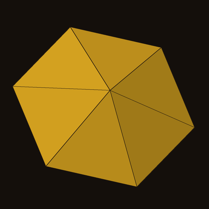<div class="an"><b>D43</b> Hexagonal Cleo</div><div class="am">piece · <a href="https://doi.org/10.5281/zenodo.23463305">#38</a></div><div class="av">Volume I, Chapter 4</div><div class="ant">not found</div></div>
<div class="atom"><div class="an"><b>D44</b> Monkey Staff B</div><div class="am">piece · <a href="https://doi.org/10.5281/zenodo.23463305">#38</a></div><div class="av">Volume I, Chapter 4</div><div class="ant">not found</div></div>
<div class="atom"><div class="an"><b>D45</b> DICTO KRE</div><div class="am">solid · <a href="https://doi.org/10.5281/zenodo.23488944">#39</a></div><div class="av">Volume I, Chapter 4</div><div class="ant">combinatorics of the rhombic enneacontahedron (known type); this metric solid new</div></div>
<div class="atom"><div class="an"><b>D46</b> DICTO PHE</div><div class="am">solid · <a href="https://doi.org/10.5281/zenodo.23488944">#39</a></div><div class="av">Volume I, Chapter 4</div><div class="ant">face counts of Goldberg GP(3,0); this solid new</div></div>
<div class="atom"><div class="an"><b>D47</b> DICTO TPP</div><div class="am">solid · <a href="https://doi.org/10.5281/zenodo.23488944">#39</a></div><div class="av">Volume I, Chapter 4</div><div class="ant">not found</div></div>
<div class="atom"><div class="an"><b>D48</b> DICTO DPHP</div><div class="am">solid · <a href="https://doi.org/10.5281/zenodo.23488944">#39</a></div><div class="av">Volume I, Chapter 4</div><div class="ant">not found</div></div>
<div class="atom"><div class="an"><b>D49</b> DICTO TPH</div><div class="am">solid · <a href="https://doi.org/10.5281/zenodo.23488944">#39</a></div><div class="av">Volume I, Chapter 4</div><div class="ant">not found</div></div>
<div class="atom">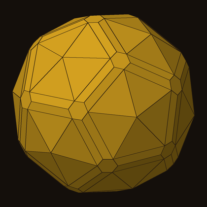<div class="an"><b>D50</b> DICTO TQH</div><div class="am">solid · <a href="https://doi.org/10.5281/zenodo.23488944">#39</a></div><div class="av">Volume I, Chapter 4</div><div class="ant">not found</div></div>
<div class="atom"><div class="an"><b>D51</b> DICTO TQP</div><div class="am">solid · <a href="https://doi.org/10.5281/zenodo.23488944">#39</a></div><div class="av">Volume I, Chapter 4</div><div class="ant">not found</div></div>
<div class="atom">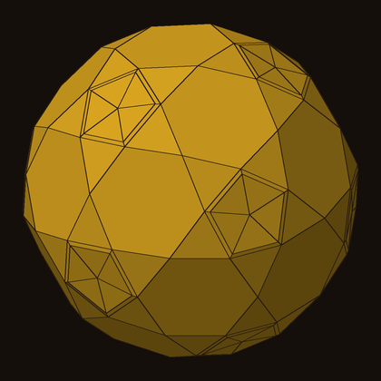<div class="an"><b>D52</b> DICTO TQHD</div><div class="am">solid · <a href="https://doi.org/10.5281/zenodo.23488944">#39</a></div><div class="av">Volume I, Chapter 4</div><div class="ant">not found</div></div>
<div class="atom">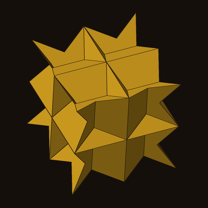<div class="an"><b>D53</b> DICTO Sunstar-Hexa-Key</div><div class="am">solid · <a href="https://doi.org/10.5281/zenodo.23497702">#42</a></div><div class="av">Volume I, Chapter 2</div><div class="ant">not found</div></div>
<div class="atom">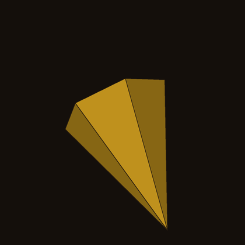<div class="an"><b>D54</b> DICTO Hex Aktis</div><div class="am">piece · <a href="https://doi.org/10.5281/zenodo.23532013">#43</a></div><div class="av">Volume I, Chapter 4</div><div class="ant">not found</div></div>
<div class="atom"><div class="an"><b>D55</b> DICTO Deltoid Aktis</div><div class="am">piece · <a href="https://doi.org/10.5281/zenodo.23532013">#43</a></div><div class="av">Volume I, Chapter 4</div><div class="ant">not found</div></div>
<div class="atom"><div class="an"><b>D56</b> DICTO Triaktis (OTT triangle ray)</div><div class="am">piece · <a href="https://doi.org/10.5281/zenodo.23532013">#43</a></div><div class="av">Volume I, Chapter 4</div><div class="ant">not found</div></div>
<div class="atom">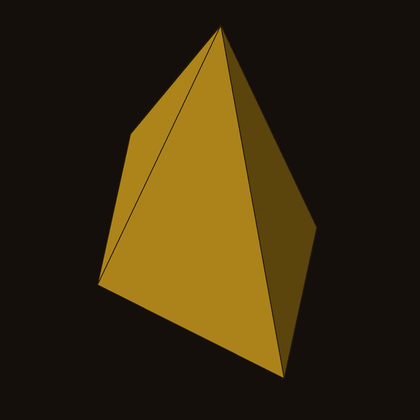<div class="an"><b>D57</b> DICTO Tetraktis (OTT rhombic ray)</div><div class="am">piece · <a href="https://doi.org/10.5281/zenodo.23532013">#43</a></div><div class="av">Volume I, Chapter 4</div><div class="ant">not found</div></div>
<div class="atom"><div class="an"><b>D58</b> DICTO TQP-252</div><div class="am">solid · <a href="https://doi.org/10.5281/zenodo.23532013">#43</a></div><div class="av">Volume I, Chapter 4</div><div class="ant">not found</div></div>
<div class="atom">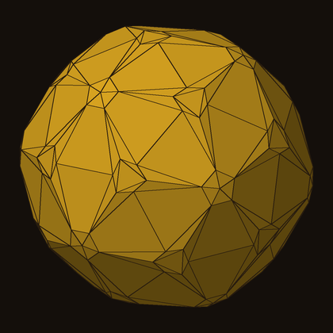<div class="an"><b>D59</b> DICTO TQ-320</div><div class="am">solid · <a href="https://doi.org/10.5281/zenodo.23532013">#43</a></div><div class="av">Volume I, Chapter 4</div><div class="ant">not found</div></div>
<div class="atom"><div class="an"><b>D60</b> DICTO TQP-402</div><div class="am">solid · <a href="https://doi.org/10.5281/zenodo.23532013">#43</a></div><div class="av">Volume I, Chapter 4</div><div class="ant">not found</div></div>
<div class="atom">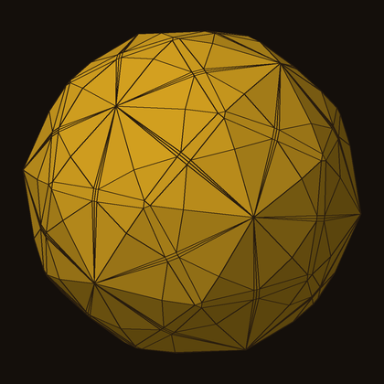<div class="an"><b>D61</b> DICTO TQ-500</div><div class="am">solid · <a href="https://doi.org/10.5281/zenodo.23532013">#43</a></div><div class="av">Volume I, Chapter 4</div><div class="ant">not found</div></div>
<div class="atom">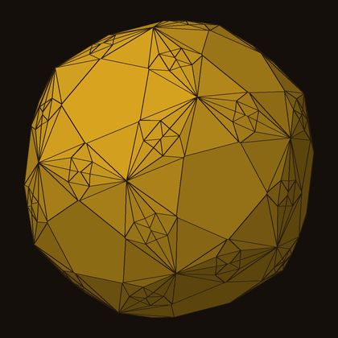<div class="an"><b>D62</b> DICTO TQD-732</div><div class="am">solid · <a href="https://doi.org/10.5281/zenodo.23532013">#43</a></div><div class="av">Volume I, Chapter 4</div><div class="ant">not found</div></div>
<div class="atom"><div class="an"><b>D63</b> DICTO TQHD-662</div><div class="am">solid · <a href="https://doi.org/10.5281/zenodo.23532013">#43</a></div><div class="av">Volume I, Chapter 4</div><div class="ant">not found</div></div>
<div class="atom"><div class="an"><b>D64</b> DICTO TQP-672</div><div class="am">solid · <a href="https://doi.org/10.5281/zenodo.23532013">#43</a></div><div class="av">Volume I, Chapter 4</div><div class="ant">not found</div></div>
<div class="atom"><div class="an"><b>D65</b> Antonius</div><div class="am">piece · <a href="https://doi.org/10.5281/zenodo.23529497">#44</a></div><div class="av">Volume I, Chapter 2</div><div class="ant">the Cleo-Icos<sup>*</sup> and Antonius: a new space-filling pair from the golden rhombohedron (#20, #44)</div><div class="rnote" style="font-size:6.6pt;color:#777">* The icosahedron face pyramid (classical; Mackay, 1962). Rediscovered by DICTO as the Cleo-Icos.</div></div>
<div class="atom"><div class="an"><b>D66</b> Penta-cleo</div><div class="am">piece · <a href="https://doi.org/10.5281/zenodo.23357896">#20</a></div><div class="av">Volume I, Chapter 1</div><div class="ant">named in #20</div></div>
<div class="atom"><div class="an"><b>D67</b> X (cube of edge φ minus one Euclid roof) (#47)</div><div class="am">piece · <a href="https://doi.org/10.5281/zenodo.23551326">#47</a></div><div class="av">Volume I, Chapter 2</div><div class="ant">named connector of #47</div></div>
<div class="atom"><div class="an"><b>D68</b> Y (cube of edge φ plus one Euclid roof) (#47)</div><div class="am">piece · <a href="https://doi.org/10.5281/zenodo.23551326">#47</a></div><div class="av">Volume I, Chapter 2</div><div class="ant">named connector of #47</div></div>
<div class="atom"><div class="an"><b>D69</b> Lotus Jewel Axes</div><div class="am">solid · <a href="https://doi.org/10.5281/zenodo.23596362">#48</a></div><div class="av">Volume I, Chapter 2</div><div class="ant">not found; the Icosaxes<sup>*</sup> with 8 Tricap dents (#48 Theorem 3)</div><div class="rnote" style="font-size:6.6pt;color:#777">* The truncated octahedron x = φ (Koca et al., 2015). DICTO's name: Icosaxes.</div></div>
<div class="atom"><div class="an"><b>D70</b> Dodecaxes</div><div class="am">solid · <a href="https://doi.org/10.5281/zenodo.23596362">#48</a></div><div class="av">Volume I, Chapter 2</div><div class="ant">not found; the Unborn Axes<sup>*</sup> with 8 Tricap keys, holding a whole regular dodecahedron (#48 Theorem 3)</div><div class="rnote" style="font-size:6.6pt;color:#777">* The truncated octahedron x = 1/φ (Koca et al., 2015). DICTO's name: Unborn Axes.</div></div>
<div class="atom">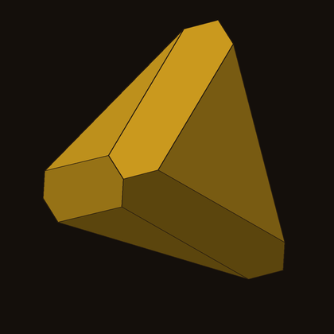<div class="an"><b>D71</b> Samson</div><div class="am">solid · <a href="https://doi.org/10.5281/zenodo.23606828">#51</a></div><div class="av">Volume I, Chapter 2</div><div class="ant">new proportion: the cube with four alternate corners cut, at the Delian bond; not found in the sources (#51)</div></div>
<div class="atom">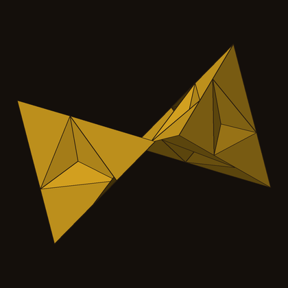<div class="an"><b>D72</b> Dented tetrahedron L/R (golden-key octet)</div><div class="am">piece · <a href="https://doi.org/10.5281/zenodo.23457016">#37</a></div><div class="av">Volume I, Chapter 2</div><div class="ant">not found</div></div>
<div class="atom"><div class="an"><b>D73</b> DICTO Fill set 1 / 2 pieces (grown bipyramid, grown tetrahedra L/R)</div><div class="am">piece · <a href="https://doi.org/10.5281/zenodo.23484012">#37a</a></div><div class="av">Volume I, Chapter 2</div><div class="ant">not found</div></div>
<div class="atom"><div class="an"><b>D74</b> Cleo Towers (8 tower pieces)</div><div class="am">piece · <a href="https://doi.org/10.5281/zenodo.23532013">#43</a></div><div class="av">Volume I, Chapter 4</div><div class="ant">not found; towers drawn at scaled sizes; true sizes in the model files</div></div>
<div class="atom"><div class="an"><b>D75</b> Polar Cleo Towers (7 tower pieces + core ray)</div><div class="am">piece · <a href="https://doi.org/10.5281/zenodo.23532013">#43</a></div><div class="av">Volume I, Chapter 4</div><div class="ant">not found; towers drawn at scaled sizes; true sizes in the model files</div></div>
<div class="atom">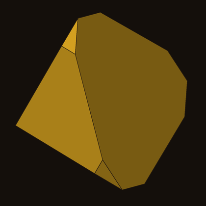<div class="an"><b>D76</b> Sonsam</div><div class="am">solid · <a href="https://doi.org/10.5281/zenodo.23635823">#56</a></div><div class="av">Volume I, Chapter 2</div><div class="ant">not found in the sources checked (#56): the twinned octet&#x27;s tetrahedral-hole piece at its equal-volume point (19 corners, a nine-sided face on the mirror plane); #56: easy to compute, so an unnamed drawing may exist</div></div>
<div class="atom"><div class="an"><b>D77</b> Lahdeli</div><div class="am">solid · <a href="https://doi.org/10.5281/zenodo.23635823">#56</a></div><div class="av">Volume I, Chapter 2</div><div class="ant">not found in the sources checked (#56): the twinned octet&#x27;s octahedral-hole piece at its equal-volume point, the twin of the regular octahedron at the Delian bond<sup>*</sup> (classical)</div><div class="rnote" style="font-size:6.6pt;color:#777">* Named Delilah in DICTO's books.</div></div>
<div class="atom"><div class="an"><b>D78</b> Ian Dury</div><div class="am">solid · <a href="https://doi.org/10.5281/zenodo.23635823">#56</a></div><div class="av">Volume I, Chapter 2</div><div class="ant">not found in the sources checked (#56): the twinned octet&#x27;s tetrahedral-hole piece at the stop 5/24, beside the classical 60° rhombohedron</div></div>
<div class="atom"><div class="an"><b>D79</b> Blockhead</div><div class="am">solid · <a href="https://doi.org/10.5281/zenodo.23635823">#56</a></div><div class="av">Volume I, Chapter 2</div><div class="ant">not found in the sources checked (#56): the twinned octet&#x27;s tetrahedral-hole piece at 3/8, the twin of the cube</div></div>
<div class="atom">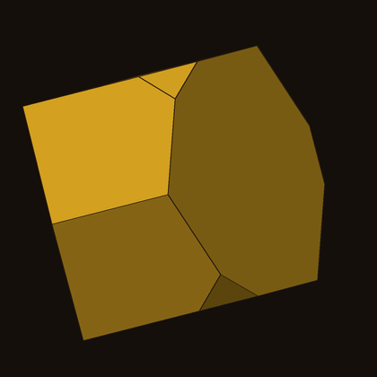<div class="an"><b>D80</b> Chucky</div><div class="am">solid · <a href="https://doi.org/10.5281/zenodo.23647898">#57</a></div><div class="av">Volume I, Chapter 5</div><div class="ant">not found in the sources checked (#57): a Janus c/h piece of ABAC at -3/8 (hexagonal top half, cubic bottom half); its volume is the mean of its two parents&#x27;</div></div>
<div class="atom">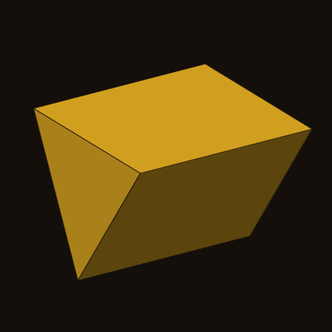<div class="an"><b>D81</b> Fang</div><div class="am">solid · <a href="https://doi.org/10.5281/zenodo.23647898">#57</a></div><div class="av">Volume I, Chapter 5</div><div class="ant">not found in the sources checked (#57): a Janus c/h piece of ABAC at 5/24 (hexagonal top half, cubic bottom half); its volume is the mean of its two parents&#x27;</div></div>
<div class="atom">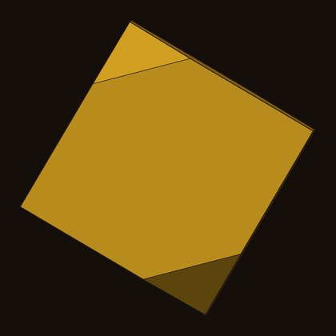<div class="an"><b>D82</b> Triskelion Tetrahedron</div><div class="am">solid · <a href="https://doi.org/10.5281/zenodo.23647898">#57</a></div><div class="av">Volume I, Chapter 5</div><div class="ant">the cubic octet&#x27;s tetrahedral piece at 5/24, a member of Samson&#x27;s sliding family (#51); met in ABAC and named in #57 (the name marks that member)</div></div>
<div class="atom">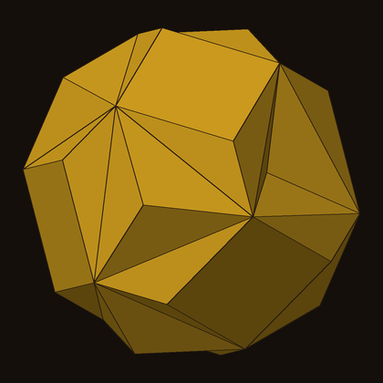<div class="an"><b>D83</b> Keyaxes</div><div class="am">solid · <a href="https://doi.org/10.5281/zenodo.23677485">#59</a></div><div class="av">Volume I, Chapter 2</div><div class="ant">the piece of the keyed Icosaxes Kagome network (the Icosaxes<sup>*</sup> with 2 Tricap dents and 6 mirrored Tricap keys, volume φ²); the network was not found in the sources checked (#59)</div><div class="rnote" style="font-size:6.6pt;color:#777">* The truncated octahedron x = φ (Koca et al., 2015). DICTO's name: Icosaxes.</div></div>
<div class="atom"><div class="an"><b>D84</b> Ganesha</div><div class="am">solid · <a href="https://doi.org/10.5281/zenodo.23682596">#61</a></div><div class="av">Volume I, Chapter 5</div><div class="ant">not found in the sources checked (#61): the Janus c/h tetrahedral piece of a squashed stacking (cubic bottom, hexagonal top); in the dataset at the parameters of #61 Figure 1 (ACBC, layer spacing² = (3/4)(2/3), λ = 1/10)</div></div>
<div class="atom">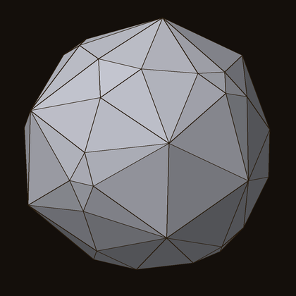<div class="an"><b>D85</b> Humpty Dumpty<sup>*</sup></div><div class="am">solid · <a href="https://doi.org/10.5281/zenodo.23690856">#63</a></div><div class="av">Volume I, Chapter 6</div><div class="ant">known: the cell-first section of the 600-cell (Schläfli, 1852) at height (2 + √5)/2, one of the sections drawn by Alicia Boole Stott (1900, cell-first series through the corner layers); the exact solid, the convex egg of 92 triangles (Td), and the name are #63&#x27;s and DICTO&#x27;s; it stays among the numbered atoms because D-numbers are never reused; forced to equal edges it becomes Fallen Humpty (D102)</div><div class="rnote" style="font-size:6.6pt;color:#777">* The cell-first section of the 600-cell at height (2 + √5)/2 (Boole Stott, 1900). Rediscovered by DICTO as Humpty Dumpty.</div></div>
<div class="atom"><div class="an"><b>D86</b> Kagemusha</div><div class="am">solid · <a href="https://doi.org/10.5281/zenodo.23687223">#62</a></div><div class="av">Volume I, Chapter 6</div><div class="ant">DICTO&#x27;s name 2026-10-30, the shadow warrior (first called Shadow-17, from the 2D view); new construction from a known piece (J11, Johnson&#x27;s gyroelongated pentagonal pyramid, Johnson 1966): two J11 glued on their pentagons; #62 identifies it as the equal-edged form of the 600-cell&#x27;s outer edge-first slices; status decided by DICTO 2026-10-28, first named in #62</div></div>
<div class="atom"><div class="an"><b>D87</b> Lion</div><div class="am">solid · <a href="https://doi.org/10.5281/zenodo.23690856">#63</a></div><div class="av">Volume I, Chapter 6</div><div class="ant">slice 1 of #63: the vertex-first central slice of the 600-cell (42 corners, 80 triangles, Ih); not found as a solid in the sources checked (#63)</div></div>
<div class="atom"><div class="an"><b>D88</b> Jabberwock</div><div class="am">solid · <a href="https://doi.org/10.5281/zenodo.23690856">#63</a></div><div class="av">Volume I, Chapter 6</div><div class="ant">slice 3 of #63: vertex-first, the largest all-triangle slice of the 600-cell (72 corners, 140 triangles); not found as a solid in the sources checked (#63)</div></div>
<div class="atom"><div class="an"><b>D89</b> Tweedledum</div><div class="am">solid · <a href="https://doi.org/10.5281/zenodo.23690856">#63</a></div><div class="av">Volume I, Chapter 6</div><div class="ant">slice 5 of #63: vertex-first slice (32 corners, 60 triangles, Ih); not found as a solid in the sources checked (#63)</div></div>
<div class="atom"><div class="an"><b>D90</b> Tweedledee</div><div class="am">solid · <a href="https://doi.org/10.5281/zenodo.23690856">#63</a></div><div class="av">Volume I, Chapter 6</div><div class="ant">slice 22 of #63: edge-first slice (32 corners, 60 triangles, D5h), another shape with Tweedledum&#x27;s counts; not found as a solid in the sources checked (#63)</div></div>
<div class="atom">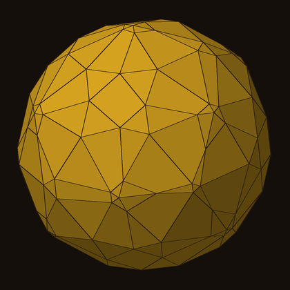<div class="an"><b>D91</b> Mad Hatter</div><div class="am">solid · <a href="https://doi.org/10.5281/zenodo.23690856">#63</a></div><div class="av">Volume I, Chapter 6</div><div class="ant">slice 28 of #63: face-first, in a gap (cut at its midpoint), one of the four 144-corner slices, all different; not found in the sources checked (#63)</div></div>
<div class="atom"><div class="an"><b>D92</b> March Hare</div><div class="am">solid · <a href="https://doi.org/10.5281/zenodo.23690856">#63</a></div><div class="av">Volume I, Chapter 6</div><div class="ant">slice 30 of #63: face-first, in a gap (cut at its midpoint), 144 corners; not found in the sources checked (#63)</div></div>
<div class="atom">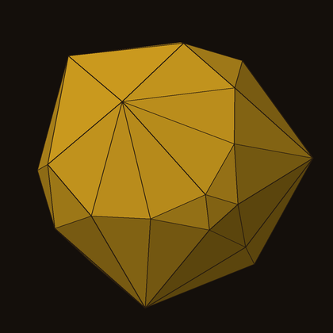<div class="an"><b>D93</b> Jubjub</div><div class="am">solid · <a href="https://doi.org/10.5281/zenodo.23690856">#63</a></div><div class="av">Volume I, Chapter 6</div><div class="ant">slice 43 of #63: face-first all-triangle slice (30 corners, 56 triangles); not found as a solid in the sources checked (#63)</div></div>
<div class="atom"><div class="an"><b>D94</b> Alice</div><div class="am">solid · <a href="https://doi.org/10.5281/zenodo.23690856">#63</a></div><div class="av">Volume I, Chapter 6</div><div class="ant">slice 49 of #63: cell-first, in a gap (cut at its midpoint), 144 corners; a gap section, not in Boole Stott&#x27;s series; not found in the sources checked (#63)</div></div>
<div class="atom">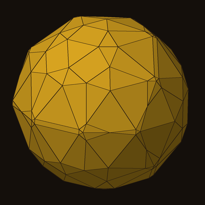<div class="an"><b>D95</b> White Rabbit</div><div class="am">solid · <a href="https://doi.org/10.5281/zenodo.23690856">#63</a></div><div class="av">Volume I, Chapter 6</div><div class="ant">slice 51 of #63: cell-first, in a gap (cut at its midpoint), 144 corners; not found in the sources checked (#63)</div></div>
<div class="atom"><div class="an"><b>D96</b> Haigha</div><div class="am">solid · <a href="https://doi.org/10.5281/zenodo.23716140">#65</a></div><div class="av">Volume I, Chapter 6</div><div class="ant">slice 33 of #65: 120-cell (Schläfli, 1852) edge-first slice, the only one with nine-sided faces; not found in the sources checked (#65)</div></div>
<div class="atom"><div class="an"><b>D97</b> Hatta</div><div class="am">solid · <a href="https://doi.org/10.5281/zenodo.23716140">#65</a></div><div class="av">Volume I, Chapter 6</div><div class="ant">slice 35 of #65: 120-cell edge-first slice, the other 114-corner slice; not found in the sources checked (#65)</div></div>
<div class="atom"><div class="an"><b>D98</b> Red King</div><div class="am">solid · <a href="https://doi.org/10.5281/zenodo.23716140">#65</a></div><div class="av">Volume I, Chapter 6</div><div class="ant">slice 77 of #65: 120-cell pentagon-first central slice, two regular decagons; the polar of the 600-cell&#x27;s edge-first shadow; not found in the sources checked (#65)</div></div>
<div class="atom">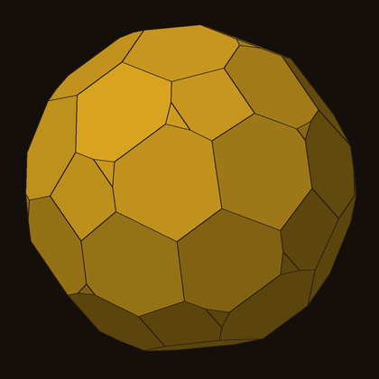<div class="an"><b>D99</b> Walrus</div><div class="am">solid · <a href="https://doi.org/10.5281/zenodo.23716140">#65</a></div><div class="av">Volume I, Chapter 6</div><div class="ant">slice 80 of #65: 120-cell pentagon-first slice, 120 corners; not found in the sources checked (#65)</div></div>
<div class="atom">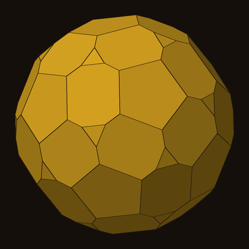<div class="an"><b>D100</b> Red Knight</div><div class="am">solid · <a href="https://doi.org/10.5281/zenodo.23716140">#65</a></div><div class="av">Volume I, Chapter 6</div><div class="ant">slice 113 of #65: 120-cell cell-first slice in a gap (cut at its midpoint), 120 corners; a gap section, not in Boole Stott&#x27;s series; not found in the sources checked (#65)</div></div>
<div class="atom"><div class="an"><b>D101</b> White Knight</div><div class="am">solid · <a href="https://doi.org/10.5281/zenodo.23716140">#65</a></div><div class="av">Volume I, Chapter 6</div><div class="ant">slice 115 of #65: 120-cell cell-first slice in a gap (cut at its midpoint): the faces and symmetry of the truncated icosidodecahedron (30 squares, 20 hexagons, 12 decagons, Ih) with two edge lengths; not found in the sources checked (#65); family: DICTO-GTT-Solids (#88)</div></div>
<div class="atom">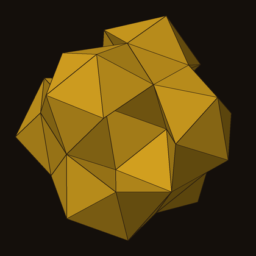<div class="an"><b>D102</b> Fallen Humpty</div><div class="am">solid · <a href="https://doi.org/10.5281/zenodo.23687223">#62</a></div><div class="av">Volume I, Chapter 6</div><div class="ant">the equal-edged form of the pattern of the D85 section: 48 corners, 92 equilateral triangles, 138 equal edges, Td, non-convex (dihedrals 81.75°–243.20°); Slice-48 in #62, named Fallen Humpty in #63; not found in the sources checked (#62); number given 2026-10-29</div></div>
<div class="atom"><div class="an"><b>D103</b> Golden TI Star</div><div class="am">solid · <a href="https://doi.org/10.5281/zenodo.23782577">#78</a></div><div class="av">Volume I, Chapter 4</div><div class="ant">the truncated icosahedron with a pyramid on every face, tips at φ × the feet of the perpendiculars (92 corners, 180 triangles, volume φ × TI, Ih); its doubled form, DICTO&#x27;s Double TI Star (tips at 2 × the face centres, volume 2 × TI, #78), is the same construction and is kept in this entry; not found in the sources checked (#78)</div></div>
<div class="atom">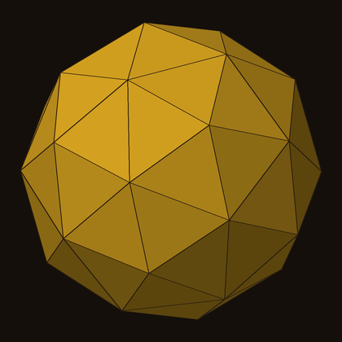<div class="an"><b>D104</b> Star Halo</div><div class="am">solid · <a href="https://doi.org/10.5281/zenodo.23782577">#78</a></div><div class="av">Volume I, Chapter 4</div><div class="ant">DICTO&#x27;s name: the hull of the TI Star&#x27;s 32 tips, a pentakis dodecahedron that is not the Catalan one (five-fold corners 1.0265 × further out than the six-fold ones); not found in the sources checked (#78)</div></div>
<div class="atom">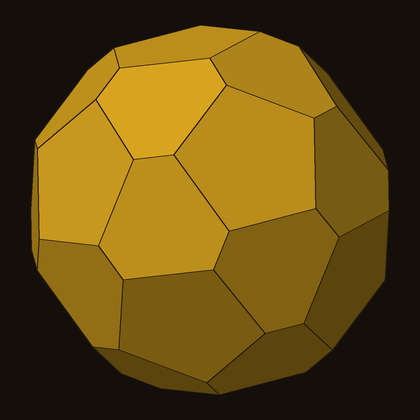<div class="an"><b>D105</b> TI Star core</div><div class="am">solid · <a href="https://doi.org/10.5281/zenodo.23782577">#78</a></div><div class="av">Volume I, Chapter 4</div><div class="ant">the icosahedron truncated at (10 − √5)/19 of each edge (12 pentagons, 20 hexagons, hexagon edges in the ratio √5), the core of every turn of the TI Star cycles and the polar partner of the Star Halo (#78)</div></div>
<div class="atom">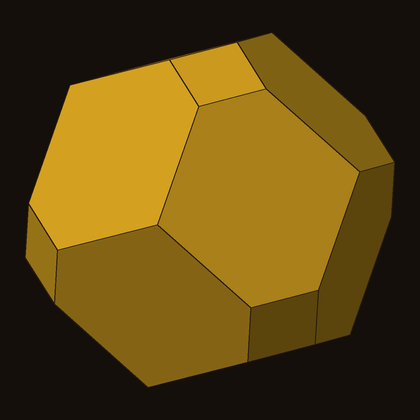<div class="an"><b>D106</b> Cube Pearl</div><div class="am">solid · <a href="https://doi.org/10.5281/zenodo.23822907">#80</a></div><div class="av">Star Cores, Chapter 4 (#80; not in Volume I)</div><div class="ant">the cube with its edges cut back by the planes (±1, ±1, 0)·x ≤ 6/5 (depth s = 3/5): 32 corners all on one sphere, 6 squares and 12 hexagons, Oh; the chamfered-cube family is classical, this depth was not found in the sources checked; its chain of T closes with period four (#80)</div></div>
<div class="atom">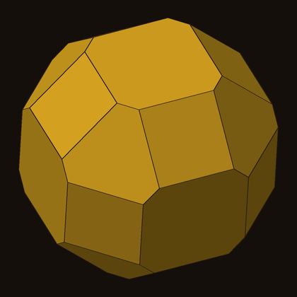<div class="an"><b>D107</b> Golden Clasp</div><div class="am">solid · <a href="https://doi.org/10.5281/zenodo.23867732">Star Cores</a></div><div class="av">Star Cores, Part IV, card D107 (not in Volume I)</div><div class="ant">the faces of the truncated cuboctahedron at depths 1 : 1/φ : 3/4 on the 4-, 3- and 2-fold axes (48 corners, 26 faces, Oh); its chain of T closes with period four, while the Archimedean truncated cuboctahedron&#x27;s does not (Star Cores study 3)</div></div>
<div class="atom">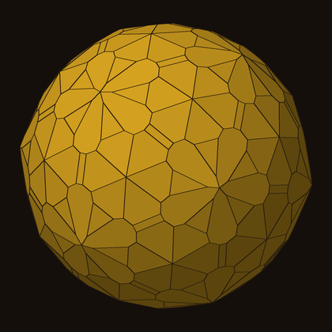<div class="an"><b>D108</b> Hamlet</div><div class="am">solid · <a href="https://doi.org/10.5281/zenodo.23822907">#80</a></div><div class="av">Star Cores, Chapter 4 (#80; not in Volume I)</div><div class="ant">step 5 of the chain of DICTO&#x27;s growth rule T from the Ogdoecontahedron, after KRE, PHE, TPP and DPHP: 452 corners, 270 faces, Ih (#80, Section 6)</div></div>
<div class="atom">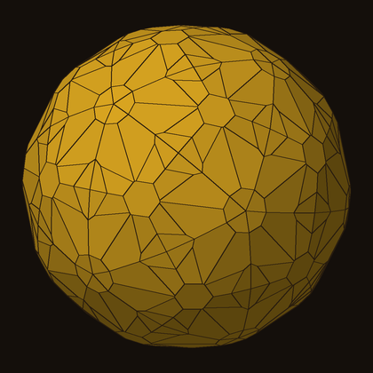<div class="an"><b>D109</b> Ophelia</div><div class="am">solid · <a href="https://doi.org/10.5281/zenodo.23822907">#80</a></div><div class="av">Star Cores, Chapter 4 (#80; not in Volume I)</div><div class="ant">step 6 of the same chain, after Hamlet: 642 corners, 440 faces, Ih (#80, Section 6); the chain does not close within nine steps</div></div>
<div class="atom">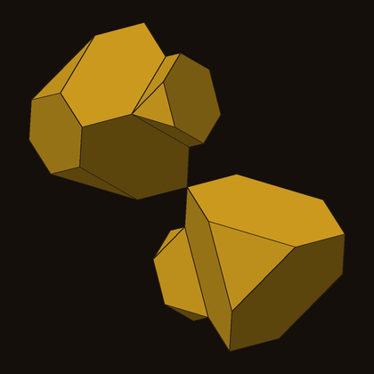<div class="an"><b>D110</b> HexOct c-tile (λ = 1/10)</div><div class="am">piece · <a href="https://doi.org/10.5281/zenodo.23737639">#75</a></div><div class="av">Volume I, Chapter 5</div><div class="ant">the c-tile of #75 at λ = 1/10, the paper&#x27;s figure weight (the tile changes along the weight walk −11/24 ≤ λ ≤ 3/8): one ball&#x27;s share of a c-layer, four Rule of Halves pieces, two towers touching at the layer&#x27;s ball; volume 1/√2; no earlier statement of tiles of this kind found (#75)</div></div>
<div class="atom"><div class="an"><b>D111</b> HexOct h-tile (λ = 1/10)</div><div class="am">piece · <a href="https://doi.org/10.5281/zenodo.23737639">#75</a></div><div class="av">Volume I, Chapter 5</div><div class="ant">the h-tile of #75 at λ = 1/10, the paper&#x27;s figure weight: one ball&#x27;s share of an h-layer, four Rule of Halves pieces, one solid; volume 1/√2; also the h-tile of #86&#x27;s member E (corners matched); no earlier statement of tiles of this kind found (#75)</div></div>
<div class="atom"><div class="an"><b>D112</b> A · HexOct 3/8 h-tile, the twisted cube</div><div class="am">solid · <a href="https://doi.org/10.5281/zenodo.23896076">#86</a></div><div class="av">not in Volume I</div><div class="ant">convex, 12 faces (6 squares of side 1/√2, 6 isosceles triangles), 11 corners, 21 edges; tiles space, not a parallelohedron; not found in the sources checked; Goldberg's lists of space-filling dodecahedra not yet read (#86)</div></div>
<div class="atom"><div class="an"><b>D113</b> B · HexOct −1/8 (whole octahedra) c-tile</div><div class="am">piece · <a href="https://doi.org/10.5281/zenodo.23896076">#86</a></div><div class="av">not in Volume I</div><div class="ant">a regular octahedron and two regular tetrahedra, 8 faces, hull ratio 6/7; the c-tile of member B (#86)</div></div>
<div class="atom"><div class="an"><b>D114</b> B · HexOct −1/8 (whole octahedra) h-tile</div><div class="am">piece · <a href="https://doi.org/10.5281/zenodo.23896076">#86</a></div><div class="av">not in Volume I</div><div class="ant">a regular octahedron and two regular tetrahedra joined the other way, 10 faces, hull ratio 6/7; the h-tile of member B (#86)</div></div>
<div class="atom">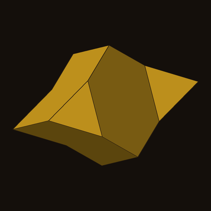<div class="an"><b>D115</b> C · HexOct −1/8 c-tile</div><div class="am">piece · <a href="https://doi.org/10.5281/zenodo.23896076">#86</a></div><div class="av">not in Volume I</div><div class="ant">the ring-build weight; the two towers joined along two trapezoids; 10 faces, hull ratio 0.800 (#86)</div></div>
<div class="atom"><div class="an"><b>D116</b> C · HexOct −1/8 h-tile</div><div class="am">piece · <a href="https://doi.org/10.5281/zenodo.23896076">#86</a></div><div class="av">not in Volume I</div><div class="ant">14 faces, hull ratio 0.735 (#86)</div></div>
<div class="atom">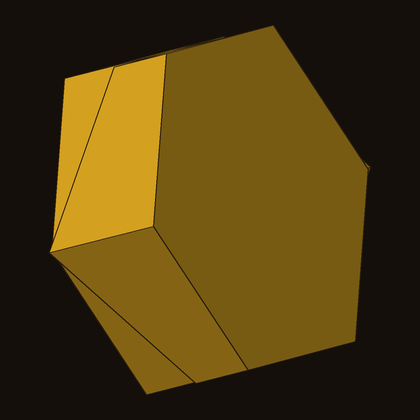<div class="an"><b>D117</b> D · HexOct −11/24 c-tile</div><div class="am">piece · <a href="https://doi.org/10.5281/zenodo.23896076">#86</a></div><div class="av">not in Volume I</div><div class="ant">18 faces, hull ratio 0.783 (#86)</div></div>
<div class="atom"><div class="an"><b>D119</b> Greater Golden Cut Dodecahedron</div><div class="am">solid · <a href="https://doi.org/10.5281/zenodo.23896439">#88</a></div><div class="av">Volume I, Chapter 1</div><div class="ant">DICTO-Kepler golden truncation: every corner cut at x = 1/3 of the edge, the pentagons golden decagons (corner sides long); 12 decagons, 20 triangles, 60 corners, Ih; new within the checks of #88</div></div>
<div class="atom">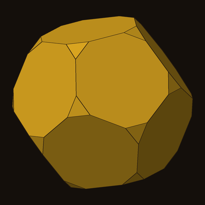<div class="an"><b>D120</b> Lesser Golden Cut Dodecahedron</div><div class="am">solid · <a href="https://doi.org/10.5281/zenodo.23896439">#88</a></div><div class="av">Volume I, Chapter 1</div><div class="ant">DICTO-Kepler golden truncation: every corner cut at x = (7 − √5)/22 ≈ 0.2165, the pentagons golden decagons (original sides long); 12 decagons, 20 triangles, 60 corners, Ih; new within the checks of #88</div></div>
<div class="atom"><div class="an"><b>D121</b> Greater Golden Cut Icosahedron</div><div class="am">solid · <a href="https://doi.org/10.5281/zenodo.23896439">#88</a></div><div class="av">Volume I, Chapter 1</div><div class="ant">DICTO-Kepler golden truncation: every corner cut at x = 1/φ² ≈ 0.3820, the triangles golden truncated triangles (corner sides long); 20 truncated triangles, 12 pentagons, 60 corners, Ih; new within the checks of #88</div></div>
<div class="atom"><div class="an"><b>D122</b> Lesser Golden Cut Icosahedron</div><div class="am">solid · <a href="https://doi.org/10.5281/zenodo.23896439">#88</a></div><div class="av">Volume I, Chapter 1</div><div class="ant">DICTO-Kepler golden truncation: every corner cut at x = 1/(φ√5) ≈ 0.2764, the triangles golden truncated triangles (original sides long); 20 truncated triangles, 12 pentagons, 60 corners, Ih; new within the checks of #88</div></div>
<div class="atom"><div class="an"><b>D123</b> Greater Golden Cut Cube</div><div class="am">solid · <a href="https://doi.org/10.5281/zenodo.23896439">#88</a></div><div class="av">Volume I, Chapter 1</div><div class="ant">DICTO-Kepler golden truncation: every corner cut at x ≈ 0.3479, the squares golden octagons (corner sides long); 6 octagons, 8 triangles, 24 corners, Oh; new within the checks of #88</div></div>
<div class="atom">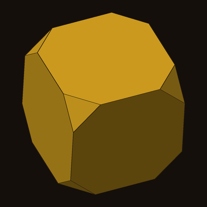<div class="an"><b>D124</b> Lesser Golden Cut Cube</div><div class="am">solid · <a href="https://doi.org/10.5281/zenodo.23896439">#88</a></div><div class="av">Volume I, Chapter 1</div><div class="ant">DICTO-Kepler golden truncation: every corner cut at x ≈ 0.2332, the squares golden octagons (original sides long); 6 octagons, 8 triangles, 24 corners, Oh; new within the checks of #88</div></div>
<div class="atom"><div class="an"><b>D125</b> Greater Golden Cut Tetrahedron</div><div class="am">solid · <a href="https://doi.org/10.5281/zenodo.23896439">#88</a></div><div class="av">Volume I, Chapter 1</div><div class="ant">DICTO-Kepler golden truncation: every corner cut at x = 1/φ² ≈ 0.3820, the triangles golden truncated triangles (corner sides long); 4 truncated triangles, 4 triangles, 12 corners, Td; new within the checks of #88</div></div>
<div class="atom"><div class="an"><b>D126</b> Lesser Golden Cut Tetrahedron</div><div class="am">solid · <a href="https://doi.org/10.5281/zenodo.23896439">#88</a></div><div class="av">Volume I, Chapter 1</div><div class="ant">DICTO-Kepler golden truncation: every corner cut at x = 1/(φ√5) ≈ 0.2764, the triangles golden truncated triangles (original sides long); 4 truncated triangles, 4 triangles, 12 corners, Td; new within the checks of #88</div></div>
<div class="atom"><div class="an"><b>D127</b> Greater Golden Cut Rhombic Dodecahedron</div><div class="am">solid · <a href="https://doi.org/10.5281/zenodo.23917931">#89</a></div><div class="av">Volume I, Chapters 2 and 6</div><div class="ant">DICTO-Kepler golden truncation: Kepler&#x27;s rhombic dodecahedron (edge 1) cut so that every rhombus is a golden octagon, corner sides a = 0.477001, original sides b = 0.294803 (a/b = φ); 12 octagons, 6 squares, 8 triangles, 48 corners, Oh; new within the checks of #89</div></div>
<div class="atom"><div class="an"><b>D128</b> Lesser Golden Cut Rhombic Dodecahedron</div><div class="am">solid · <a href="https://doi.org/10.5281/zenodo.23917931">#89</a></div><div class="av">Volume I, Chapters 2 and 6</div><div class="ant">DICTO-Kepler golden truncation: the rhombic dodecahedron (edge 1) cut so that every rhombus is a golden octagon, corner sides a = 0.322952, original sides b = 0.522548 (a/b = 1/φ); 12 octagons, 6 squares, 8 triangles, 48 corners, Oh; new within the checks of #89</div></div>
<div class="atom"><div class="an"><b>D129</b> Greater Golden Cut Rhombic Triacontahedron</div><div class="am">solid · <a href="https://doi.org/10.5281/zenodo.23917931">#89</a></div><div class="av">Volume I, Chapters 2 and 6</div><div class="ant">DICTO-Kepler golden truncation: the rhombic triacontahedron (edge 1) cut so that every rhombus is a golden octagon, a = 0.463634, b = 0.286541 (a/b = φ); 30 octagons, 12 pentagons, 20 triangles, 120 corners, Ih; new within the checks of #89</div></div>
<div class="atom"><div class="an"><b>D130</b> Lesser Golden Cut Rhombic Triacontahedron</div><div class="am">solid · <a href="https://doi.org/10.5281/zenodo.23917931">#89</a></div><div class="av">Volume I, Chapters 2 and 6</div><div class="ant">DICTO-Kepler golden truncation: the rhombic triacontahedron (edge 1) cut so that every rhombus is a golden octagon, a = 0.316769, b = 0.512543 (a/b = 1/φ); 30 octagons, 12 pentagons, 20 triangles, 120 corners, Ih; new within the checks of #89</div></div>
<div class="atom"><div class="an"><b>D131</b> Greater Golden Cut Snub Dodecahedron L/R</div><div class="am">solid · <a href="https://doi.org/10.5281/zenodo.23917931">#89</a></div><div class="av">Volume I, Chapters 2 and 6</div><div class="ant">DICTO Golden-Regular Cut, left and right hands: every corner of the snub dodecahedron cut at x = 1/3, the pentagons golden decagons (corner sides long), the triangles regular hexagons; 12 decagons, 80 hexagons, 60 corner pentagons, 300 corners, I; new within the checks of #89</div></div>
<div class="atom"><div class="an"><b>D132</b> Lesser Golden Cut Snub Dodecahedron L/R</div><div class="am">solid · <a href="https://doi.org/10.5281/zenodo.23917931">#89</a></div><div class="av">Volume I, Chapters 2 and 6</div><div class="ant">DICTO Golden-Regular Cut, left and right hands: every corner of the snub dodecahedron cut at x = 1/(φ√5), the triangles golden truncated triangles (original sides long), the pentagons regular decagons; 80 truncated triangles, 12 decagons, 60 corner pentagons, 300 corners, I; also a DICTO-GTT-Solid (#89); new within the checks of #89</div></div>
<div class="atom"><div class="an"><b>D133</b> DICTO Void Keeper</div><div class="am">piece · <a href="https://doi.org/10.5281/zenodo.23968272">#96</a></div><div class="av">#96 (not in Volume I)</div><div class="ant">the room adaptor of the densest lattice packing of the cut OG: the Voronoi cell of the gap-room centres minus the cut OGs; one solid, genus 0, volume 0.326555; cut OG + Void Keeper fill space by translation (DICTO Void set 1); new within the checks of #96</div></div>
<div class="atom"><div class="an"><b>D134</b> DICTO Golden Skin</div><div class="am">piece (a family, one per brick size) · <a href="https://doi.org/10.5281/zenodo.23968272">#96</a></div><div class="av">#96 (not in Volume I)</div><div class="ant">the golden rhombohedra that touch an OG on a lattice of its own five-fold axes, minus the OG; OG + Golden Skin + prolate golden rhombohedron fill space (DICTO Void set 2); the skin is 2.9% of space at brick edge t/96, never zero; drawn as a section (teal OG, orange skin, gold whole bricks); new within the checks of #96</div></div>
<div class="atom"><div class="an"><b>D135</b> Weirdstone L/R</div><div class="am">piece · <a href="https://doi.org/10.5281/zenodo.23173809">finding F21</a></div><div class="av">not in Volume I</div><div class="ant">the corner cap of the all-icosahedral octet&#x27;s tetrahedron: an icosahedron of edge 1/2, 4 Weirdstones and 6 Tadpoles fill it exactly; 7 corners, 7 faces (4 triangles, 3 four-sided), left and right hands; not found as fillings (F21)</div></div>
<div class="atom"><div class="an"><b>D136</b> Tadpole L/R</div><div class="am">piece · <a href="https://doi.org/10.5281/zenodo.23173809">finding F21</a></div><div class="av">not in Volume I</div><div class="ant">the edge cap of the same tetrahedron, 6 per tetrahedron: 6 corners, 6 faces (4 triangles, 2 four-sided), left and right hands; not found as fillings (F21)</div></div>
<div class="atom"><div class="an"><b>D137</b> Frog Chorus (the gap star)</div><div class="am">piece · <a href="https://doi.org/10.5281/zenodo.23173809">finding F21</a></div><div class="av">not in Volume I</div><div class="ant">the closed gap star round each corner of the all-icosahedral octet, volume (33 + 23√5)/48 at icosahedron edge 1: 522 corners, 164 faces; neighbouring gap stars touch; not found as fillings (F21)</div></div>
<div class="atom"><div class="an"><b>D138</b> Diadem L/R</div><div class="am">piece · <a href="https://doi.org/10.5281/zenodo.23311353">#24</a></div><div class="av">Volume I, Chapter 3</div><div class="ant">piece of the Bodhi seed&#x27;s Kit B: 6 corners, 2 triangles and 3 four-sided faces, volume one third of the oblate golden rhombohedron; left and right hands; the kits were not found (#24)</div></div>
<div class="atom"><div class="an"><b>D139</b> Hasu</div><div class="am">piece · <a href="https://doi.org/10.5281/zenodo.23333183">#26</a></div><div class="av">Volume I, Chapter 2</div><div class="ant">the finned unit (defined in #19, Fig. 5): an icosahedron with its share of the Lotus seed&#x27;s gap pieces; twelve round a central icosahedron rebuild the Lotus seed, each lifting straight out along its axis; as one solid 22 corners, 15 faces, C5v; the icosahedral counterpart of D8; the piece names are DICTO&#x27;s (#26)</div></div>
<div class="atom"><div class="an"><b>D140</b> Chatra</div><div class="am">piece · <a href="https://doi.org/10.5281/zenodo.23333183">#26</a></div><div class="av">Volume I, Chapter 2</div><div class="ant">piece of the Bodhi seed&#x27;s Kit A, 60 per seed: 7 corners, 3 triangles, 2 four-sided faces and 1 pentagon; the kits were not found (#24)</div></div>
<div class="atom"><div class="an"><b>D141</b> Mudra</div><div class="am">piece · <a href="https://doi.org/10.5281/zenodo.23333183">#26</a></div><div class="av">Volume I, Chapter 2</div><div class="ant">piece of the Bodhi seed&#x27;s Kit A: a pyramid on a four-sided base; the kits were not found (#24)</div></div>
<div class="atom"><div class="an"><b>D142</b> Vajra (twist)</div><div class="am">piece · <a href="https://doi.org/10.5281/zenodo.23345502">#27</a></div><div class="av">Volume I, Chapter 3</div><div class="ant">piece of the Dharma shell, 20 per shell: a twisted triangular frustum, 6 corners, 8 triangles, C3v; No earlier description found in the sources checked.</div></div>
<div class="atom"><div class="an"><b>D143</b> Cleo-low 2</div><div class="am">piece · <a href="https://doi.org/10.5281/zenodo.23345502">#27</a></div><div class="av">Volume I, Chapter 3</div><div class="ant">piece of the Dharma shell, 20 per shell: a triangular pyramid on a face of the outer icosahedron, C3v; No earlier description found in the sources checked.</div></div>
<div class="atom"><div class="an"><b>D144</b> Vajra-blade</div><div class="am">piece · <a href="https://doi.org/10.5281/zenodo.23345502">#27</a></div><div class="av">Volume I, Chapter 3</div><div class="ant">piece of the Dharma shell, 60 per shell: a tetrahedron with one mirror; No earlier description found in the sources checked.</div></div>
<div class="atom"><div class="an"><b>D145</b> Sevenfold-blade</div><div class="am">piece · <a href="https://doi.org/10.5281/zenodo.23345502">#27</a></div><div class="av">Volume I, Chapter 3</div><div class="ant">piece of the Dharma shell, 30 per shell: 6 triangles and 1 four-sided face, volume 5 − 2√5; No earlier description found in the sources checked.</div></div>
<div class="atom"><div class="an"><b>D146</b> Triskelion Hex</div><div class="am">piece · <a href="https://doi.org/10.5281/zenodo.23351291">#19</a></div><div class="av">Volume I, Chapter 1</div><div class="ant">FUJI (D12) and three AXE<sup>*</sup> round a corner of the dodecahedron: 10 corners, 12 triangles and 1 hexagon; new with FUJI (#19)</div><div class="rnote" style="font-size:6.6pt;color:#777">* Mosseri–Sadoc tile t6, scaled by 1/φ (Mosseri and Sadoc, 1982). Rediscovered by DICTO as AXE.</div></div>
<div class="atom"><div class="an"><b>D147</b> Triskelion</div><div class="am">piece · <a href="https://doi.org/10.5281/zenodo.23351291">#19</a></div><div class="av">Volume I, Chapter 1</div><div class="ant">a CLEO<sup>*</sup> and three AXE<sup>**</sup> round a corner of the dodecahedron: 7 corners, 10 triangles; exactly the volume of the pentagonal cap J2, (5 + √5)/24 (#19); No earlier description found in the sources checked.</div><div class="rnote" style="font-size:6.6pt;color:#777">* Mosseri–Sadoc tile t4, scaled by 1/φ (Mosseri and Sadoc, 1982). Rediscovered by DICTO as CLEO. ** Mosseri–Sadoc tile t6, scaled by 1/φ (Mosseri and Sadoc, 1982). Rediscovered by DICTO as AXE.</div></div>
<div class="atom"><div class="an"><b>D148</b> Julia G3</div><div class="am">piece · <a href="https://doi.org/10.5281/zenodo.23633365">#54</a></div><div class="av">Volume I, Chapter 4</div><div class="ant">step 3 of the golden cycle&#x27;s gnomon (D′ → ID), 12 over D′&#x27;s pentagons: a pentagonal dome, 15 corners, 7 pentagons and 5 triangles; nearest classical form a dodecahedral cap; this reading of the cycle not found (#54)</div></div>
<div class="atom"><div class="an"><b>D149</b> Julia G4</div><div class="am">piece · <a href="https://doi.org/10.5281/zenodo.23633365">#54</a></div><div class="av">Volume I, Chapter 4</div><div class="ant">step 4 (ID → OG), 12 over ID&#x27;s pentagons: 11 corners, 1 pentagon, 5 four-sided faces and 5 triangles; a distorted relative of Johnson&#x27;s J9 (#54)</div></div>
<div class="atom"><div class="an"><b>D150</b> Julia G5a</div><div class="am">piece · <a href="https://doi.org/10.5281/zenodo.23633365">#54</a></div><div class="av">Volume I, Chapter 4</div><div class="ant">step 5 (OG → rTI), 60 over the OG&#x27;s kites: a notched triangular wedge, 8 corners, 5 four-sided faces and 2 triangles (#54)</div></div>
<div class="atom"><div class="an"><b>D151</b> Julia G5b</div><div class="am">piece · <a href="https://doi.org/10.5281/zenodo.23633365">#54</a></div><div class="av">Volume I, Chapter 4</div><div class="ant">step 5 (OG → rTI), 20 over the OG&#x27;s hexagons: a skew hexagonal frustum, two parallel hexagons (not translates) joined by 6 four-sided faces (#54)</div></div>
<div class="atom"><div class="an"><b>D152</b> Julia G6</div><div class="am">piece · <a href="https://doi.org/10.5281/zenodo.23633365">#54</a></div><div class="av">Volume I, Chapter 4</div><div class="ant">step 6 (rTI → TI): the corner tetrahedron, 60 per turn, each (1/80)φ⁻² of the icosahedron I (#54)</div></div>
<div class="atom"><div class="an"><b>D153</b> Julia G8</div><div class="am">piece · <a href="https://doi.org/10.5281/zenodo.23633365">#54</a></div><div class="av">Volume I, Chapter 4</div><div class="ant">step 8 (H → jtI), 12 over H&#x27;s pentagons: a pentagonal pyramid; nearest Johnson J2 (#54)</div></div>
<div class="atom"><div class="an"><b>D154</b> Julia G9</div><div class="am">piece · <a href="https://doi.org/10.5281/zenodo.23633365">#54</a></div><div class="av">Volume I, Chapter 4</div><div class="ant">step 9 (jtI → RT), 60 over jtI&#x27;s four-sided faces, five round each five-fold corner of RT: a skew quadrilateral pyramid; nearest Johnson J1 (#54)</div></div>
<div class="atom"><div class="an"><b>D155</b> Julia G10</div><div class="am">piece · <a href="https://doi.org/10.5281/zenodo.23633365">#54</a></div><div class="av">Volume I, Chapter 4</div><div class="ant">step 10 (RT → M), 30 over RT&#x27;s rhombi: a rhombic ridge roof, 6 corners, 1 rhombus and 6 triangles (#54)</div></div>
<div class="atom"><div class="an"><b>D156</b> Pimentel G11</div><div class="am">piece · <a href="https://doi.org/10.5281/zenodo.23633365">#54</a></div><div class="av">Volume I, Chapter 4</div><div class="ant">step 11 (M → I·φ³), 60 per turn: a triangular bipyramid, 6 triangles, each (1/60)φ⁷ of I; nearest Johnson J12; the step that closes the classical gnomon of the turn; named in tribute to Júlia Pimentel (#54)</div></div>
<div class="atom"><div class="an"><b>D157</b> Sonsam-K</div><div class="am">piece · <a href="https://doi.org/10.5281/zenodo.23635823">#56</a></div><div class="av">Volume I, Chapter 2</div><div class="ant">the keyed Sonsam (D76): 35 corners, 40 faces; its three dents meet at the piece&#x27;s site in one pinch corner; the keyed forms were not found in the sources (#56)</div></div>
<div class="atom"><div class="an"><b>D158</b> Lahdeli-K</div><div class="am">piece · <a href="https://doi.org/10.5281/zenodo.23635823">#56</a></div><div class="av">Volume I, Chapter 2</div><div class="ant">the keyed Lahdeli (D77): 48 corners, 62 faces; the keyed forms were not found in the sources (#56)</div></div>
<div class="atom"><div class="an"><b>D159</b> Ian Dury-K</div><div class="am">piece · <a href="https://doi.org/10.5281/zenodo.23635823">#56</a></div><div class="av">Volume I, Chapter 2</div><div class="ant">the keyed Ian Dury (D78): 29 corners, 34 faces, C3v; its three dents meet at the piece&#x27;s site in one pinch corner; the keyed forms were not found in the sources (#56)</div></div>
<div class="atom"><div class="an"><b>D160</b> Rhombo-K</div><div class="am">piece · <a href="https://doi.org/10.5281/zenodo.23635823">#56</a></div><div class="av">Volume I, Chapter 2</div><div class="ant">the keyed 60° rhombohedron, a six-pointed star: 38 corners, 48 faces, D3d; the plain 60° rhombohedron is classical; the keyed forms were not found in the sources (#56)</div></div>
<div class="atom"><div class="an"><b>D161</b> Maedate</div><div class="am">piece · <a href="https://doi.org/10.5281/zenodo.23850490">#85</a></div><div class="av">not in Volume I</div><div class="ant">fills a notch of Kagemusha (D86): joins its two crossing notch spikes into one piece, an irregular octahedron, 6 corners, 8 triangles; with Maedate the star grows most (#85); No earlier description found in the sources checked.</div></div>
<div class="atom"><div class="an"><b>D162</b> Kuwagata</div><div class="am">piece · <a href="https://doi.org/10.5281/zenodo.23850490">#85</a></div><div class="av">not in Volume I</div><div class="ant">fills a notch of Kagemusha (D86): two pyramids with their apexes lowered to the notch&#x27;s mirror plane, 5 corners, 6 triangles; with Kuwagata the star of mirrored spikes stops growing at step three (#85); No earlier description found in the sources checked.</div></div>
<div class="atom"><div class="an"><b>D163</b> Greater Golden Cut Great Dodecahedron</div><div class="am">star polyhedron · <a href="https://doi.org/10.5281/zenodo.23917931">#89</a></div><div class="av">Volume I, Chapters 2 and 6</div><div class="ant">DICTO&#x27;s golden cut of the great dodecahedron: every corner cut at x = 1/3 of the edge, the 12 pentagons golden decagons with sides in ratio φ (corner sides long), the corners 12 pentagrams; 60 corners; a star polyhedron, its faces pass through each other, drawn as a see-through shell; golden cuts of the Kepler–Poinsot polyhedra not found as such in the sources checked (#89)</div></div>
<div class="atom"><div class="an"><b>D164</b> Lesser Golden Cut Great Dodecahedron</div><div class="am">star polyhedron · <a href="https://doi.org/10.5281/zenodo.23917931">#89</a></div><div class="av">Volume I, Chapters 2 and 6</div><div class="ant">DICTO&#x27;s golden cut of the great dodecahedron: every corner cut at x = (7 − √5)/22 of the edge, the 12 pentagons golden decagons with sides in ratio φ (original sides long), the corners 12 pentagrams; 60 corners; a star polyhedron, its faces pass through each other, drawn as a see-through shell; golden cuts of the Kepler–Poinsot polyhedra not found as such in the sources checked (#89)</div></div>
<div class="atom"><div class="an"><b>D165</b> Greater Golden Cut Great Icosahedron</div><div class="am">star polyhedron · <a href="https://doi.org/10.5281/zenodo.23917931">#89</a></div><div class="av">Volume I, Chapters 2 and 6</div><div class="ant">DICTO&#x27;s golden cut of the great icosahedron: every corner cut at x = 1/φ² of the edge, the 20 triangles golden truncated triangles with sides in ratio φ (corner sides long), the corners 12 pentagrams; 60 corners; a star polyhedron, its faces pass through each other, drawn as a see-through shell; golden cuts of the Kepler–Poinsot polyhedra not found as such in the sources checked (#89)</div></div>
<div class="atom"><div class="an"><b>D166</b> Lesser Golden Cut Great Icosahedron</div><div class="am">star polyhedron · <a href="https://doi.org/10.5281/zenodo.23917931">#89</a></div><div class="av">Volume I, Chapters 2 and 6</div><div class="ant">DICTO&#x27;s golden cut of the great icosahedron: every corner cut at x = 1/(φ√5) of the edge, the 20 triangles golden truncated triangles with sides in ratio φ (original sides long), the corners 12 pentagrams; 60 corners; a star polyhedron, its faces pass through each other, drawn as a see-through shell; golden cuts of the Kepler–Poinsot polyhedra not found as such in the sources checked (#89)</div></div>
<div class="atom"><div class="an"><b>D167</b> Greater Golden Cut Small Stellated Dodecahedron</div><div class="am">star polyhedron · <a href="https://doi.org/10.5281/zenodo.23917931">#89</a></div><div class="av">Volume I, Chapters 2 and 6</div><div class="ant">DICTO&#x27;s golden cut of the small stellated dodecahedron: every corner cut at x = (7 + √5)/22 of the edge, the 12 pentagrams golden truncated pentagrams with sides in ratio φ (corner sides long), the corners 12 pentagons; 60 corners; a star polyhedron, its faces pass through each other, drawn as a see-through shell; golden cuts of the Kepler–Poinsot polyhedra not found as such in the sources checked (#89)</div></div>
<div class="atom"><div class="an"><b>D168</b> Lesser Golden Cut Small Stellated Dodecahedron</div><div class="am">star polyhedron · <a href="https://doi.org/10.5281/zenodo.23917931">#89</a></div><div class="av">Volume I, Chapters 2 and 6</div><div class="ant">DICTO&#x27;s golden cut of the small stellated dodecahedron: every corner cut at x = 1/3 of the edge, the 12 pentagrams golden truncated pentagrams with sides in ratio φ (original sides long), the corners 12 pentagons; 60 corners; a star polyhedron, its faces pass through each other, drawn as a see-through shell; golden cuts of the Kepler–Poinsot polyhedra not found as such in the sources checked (#89)</div></div>
<div class="atom"><div class="an"><b>D169</b> Greater Golden Cut Great Stellated Dodecahedron</div><div class="am">star polyhedron · <a href="https://doi.org/10.5281/zenodo.23917931">#89</a></div><div class="av">Volume I, Chapters 2 and 6</div><div class="ant">DICTO&#x27;s golden cut of the great stellated dodecahedron: every corner cut at x = (7 + √5)/22 of the edge, the 12 pentagrams golden truncated pentagrams with sides in ratio φ (corner sides long), the corners 20 triangles; 60 corners; a star polyhedron, its faces pass through each other, drawn as a see-through shell; golden cuts of the Kepler–Poinsot polyhedra not found as such in the sources checked (#89)</div></div>
<div class="atom"><div class="an"><b>D170</b> Lesser Golden Cut Great Stellated Dodecahedron</div><div class="am">star polyhedron · <a href="https://doi.org/10.5281/zenodo.23917931">#89</a></div><div class="av">Volume I, Chapters 2 and 6</div><div class="ant">DICTO&#x27;s golden cut of the great stellated dodecahedron: every corner cut at x = 1/3 of the edge, the 12 pentagrams golden truncated pentagrams with sides in ratio φ (original sides long), the corners 20 triangles; 60 corners; a star polyhedron, its faces pass through each other, drawn as a see-through shell; golden cuts of the Kepler–Poinsot polyhedra not found as such in the sources checked (#89)</div></div>
<div class="atom"><div class="an"><b>D171</b> Lesser Golden OG</div><div class="am">solid · <a href="https://doi.org/10.5281/zenodo.23931389">#91</a></div><div class="av">not in Volume I</div><div class="ant">the OG&#x27;s pattern (D28; 60 kites and 20 regular hexagons, 102 corners, Ih) at μ = √5; new within the checks of #91</div></div>
<div class="atom"><div class="an"><b>D172</b> Greater Golden OG</div><div class="am">solid · <a href="https://doi.org/10.5281/zenodo.23931389">#91</a></div><div class="av">not in Volume I</div><div class="ant">the OG&#x27;s pattern (60 kites and 20 regular hexagons, 102 corners, Ih) at μ = (13 + 6√5)/11; new within the checks of #91</div></div>
<div class="atom"><div class="an"><b>D173</b> Narcissus</div><div class="am">piece · <a href="https://doi.org/10.5281/zenodo.24005929">#98</a></div><div class="av">not in Volume I</div><div class="ant">the h-layer piece at weight λ ≥ 3/8, mirror-symmetric (C3v): 10 corners, 10 faces (1 hexagon, 3 four-sided, 6 triangles), volume √2/4; fills space alone; a new member of Goldberg&#x27;s space-filler type 10-XII (#97); new within the sources checked as this metric piece (#98)</div></div>
<div class="atom"><div class="an"><b>D174</b> Covenant</div><div class="am">solid · <a href="https://doi.org/10.5281/zenodo.24005929">#98</a></div><div class="av">not in Volume I</div><div class="ant">two Narcissus (D173) joined on their hexagons with a 60° turn: a convex parallelohedron of 12 parallelograms, 14 corners, four zones; new as the c = 1/3 member of the four-zone family; parallelohedra are Fedorov&#x27;s (1885) (#98)</div></div>
<div class="atom"><div class="an"><b>D175</b> Sheriff</div><div class="am">piece · <a href="https://doi.org/10.5281/zenodo.24012439">#99</a></div><div class="av">not in Volume I</div><div class="ant">the pentagonal cap of the icosahedron minus its dodecahedron, an icosahedron corner over a dodecahedron face: 6 corners, 5 triangles and 1 pentagon; the icosahedron is the dodecahedron, 12 Sheriffs and 30 Lone-stars, exactly; new within the sources checked (#99)</div></div>
<div class="atom"><div class="an"><b>D176</b> Lone-star</div><div class="am">piece · <a href="https://doi.org/10.5281/zenodo.24012439">#99</a></div><div class="av">not in Volume I</div><div class="ant">the thin wedge of the same gap, 30 per icosahedron: a tetrahedron, its two long edges crossing at a right angle, four equal edges; new within the sources checked (#99)</div></div>
<div class="atom"><div class="an"><b>D177</b> DICTO 1:2 Truncated Octahedron</div><div class="am">solid · <a href="https://doi.org/10.5281/zenodo.24121177">#105</a></div><div class="av">not in Volume I</div><div class="ant">the permutohedron of 1, 2, 4, 5: 6 squares and 8 hexagons with sides 1 and 2 in turn, 24 corners, Oh; the central slice of the 4D Vacuus of the permutohedron; sweeps of these sections are known (Bowers; Polytope Wiki), none found that names this central one; also the T(1/2) member of the truncated-octahedron family of Koca et al. 2015 (#105); its own 3D Vacuus: its 36 edges on three octagon cards and twelve hexagon cards (#105; see the Vacuus of the DICTO 1:2 and 2:1 Truncated Octahedra among the structures)</div></div>
<div class="atom"><div class="an"><b>D178</b> DICTO 2:1 Truncated Octahedron</div><div class="am">solid · <a href="https://doi.org/10.5281/zenodo.24121177">#105</a></div><div class="av">not in Volume I</div><div class="ant">the permutohedron of −5, −1, 1, 5: 6 squares and 8 hexagons with sides 2 and 1 in turn, 24 corners, Oh; at half size its hexagons are those of the 1:2 (D177); status as D177 (#105); its Vacuus splits as the 1:2&#x27;s (#107)</div></div>
<div class="atom"><div class="an"><b>D179</b> Aequus TC-10 (tetrahedron ∩ cube)</div><div class="am">solid · Equanimity (<a href="https://doi.org/10.5281/zenodo.24379796">#111</a>)</div><div class="av">not in Volume I</div><div class="ant">the first of the twelve Aequi (Latin aequus, “even, fair”), the fair dice of Equanimity: on each, every face subtends the same solid angle 4π/N from the centre, so each face has chance 1/N. Here 4 triangles and 6 hexagons, 16 corners, Td: the cube&#x27;s faces at 1.0659… with the tetrahedron&#x27;s at 1; its Vacuus hides the regular 30-gon (plates at 7π/30 to a mirror); its radii lie in no regular polygon&#x27;s field; Dehn invariant nonzero (numerical screen, study 2026-11-19-dehn-atoms); not found in the sources checked (Equanimity)</div></div>
<div class="atom"><div class="an"><b>D180</b> Aequus CO-14 (cube ∩ octahedron)</div><div class="am">solid · Equanimity (<a href="https://doi.org/10.5281/zenodo.24379796">#111</a>)</div><div class="av">not in Volume I</div><div class="ant">6 squares and 8 hexagons, 24 corners, Oh; nicknamed Lucky 7. The fair cut is exact: |x| + |y| + |z| ≤ 1 + √(2 tan(π/14) tan(2π/7)) in the cube&#x27;s scale, with r/R = cot(2π/7): the regular heptagon in its lengths as well as in its Vacuus (plates at 2π/7); it sits just past DICTO&#x27;s equal-depth cube–octahedron solid of The Golden Ladder; Dehn invariant nonzero (numerical screen, study 2026-11-19-dehn-atoms), and proved nonzero in Lean (study lean-dehn-7); not found in the sources checked (Equanimity)</div></div>
<div class="atom"><div class="an"><b>D181</b> Aequus TRD-16 (tetrahedron ∩ rhombic dodecahedron)</div><div class="am">solid · Equanimity (<a href="https://doi.org/10.5281/zenodo.24379796">#111</a>)</div><div class="av">not in Volume I</div><div class="ant">4 triangles and 12 pentagons, 22 corners, Td; the rhombic dodecahedron&#x27;s faces at 1.0692… with the tetrahedron&#x27;s at 1, 6.9% past the equal-depth member, the farthest of the twelve; its Vacuus hides the regular 48-gon (plates at 5π/24); its radii lie in no regular polygon&#x27;s field; Dehn invariant nonzero (numerical screen, study 2026-11-19-dehn-atoms); not found in the sources checked (Equanimity)</div></div>
<div class="atom"><div class="an"><b>D182</b> Aequus TD-16 (tetrahedron ∩ dodecahedron)</div><div class="am">solid · Equanimity (<a href="https://doi.org/10.5281/zenodo.24379796">#111</a>)</div><div class="av">not in Volume I</div><div class="ant">4 triangles and 12 hexagons, 28 corners; it keeps only the 12 rotations of the tetrahedron, so it comes in a left and a right hand; the dodecahedron&#x27;s faces at 1.0603… with the tetrahedron&#x27;s at 1; its Vacuus hides the regular 48-gon (plates at 5π/24) and turns without reflecting; Dehn invariant nonzero (numerical screen, study 2026-11-19-dehn-atoms); not found in the sources checked (Equanimity)</div></div>
<div class="atom"><div class="an"><b>D183</b> Aequus CRD-18 (cube ∩ rhombic dodecahedron)</div><div class="am">solid · Equanimity (<a href="https://doi.org/10.5281/zenodo.24379796">#111</a>)</div><div class="av">not in Volume I</div><div class="ant">6 squares and 12 hexagons, 32 corners, Oh; the rhombic dodecahedron&#x27;s faces at 1.0312… with the cube&#x27;s at 1; its Vacuus hides the regular 18-gon (plates at 5π/18); its radii lie in no regular polygon&#x27;s field; Dehn invariant 0, the only one of the twelve (numerical screen, study 2026-11-19-dehn-atoms); not found in the sources checked (Equanimity)</div></div>
<div class="atom"><div class="an"><b>D184</b> Aequus CD-18 (cube ∩ dodecahedron)</div><div class="am">solid · Equanimity (<a href="https://doi.org/10.5281/zenodo.24379796">#111</a>)</div><div class="av">not in Volume I</div><div class="ant">6 rectangles and 12 hexagons, 32 corners, Th: in the shared group the cube&#x27;s axes are only 2-fold, and its squares become rectangles; the dodecahedron&#x27;s faces at 1.0384… with the cube&#x27;s at 1, a fair cut algebraic of degree 48; with no regular face, its Vacuus shows no hidden angle; Dehn invariant nonzero (numerical screen, study 2026-11-19-dehn-atoms); not found in the sources checked (Equanimity)</div></div>
<div class="atom"><div class="an"><b>D185</b> Aequus ORD-20 (octahedron ∩ rhombic dodecahedron)</div><div class="am">solid · Equanimity (<a href="https://doi.org/10.5281/zenodo.24379796">#111</a>)</div><div class="av">not in Volume I</div><div class="ant">8 triangles and 12 hexagons, 30 corners, Oh; the fair cut is exact, the rhombic dodecahedron&#x27;s faces at (2√2 + 3 − √5)/(2√3) with the octahedron&#x27;s at 1, and (R/r)² = 11/3 + 2√2 − √5 − (2/3)√10: golden and silver together in a solid of cubic symmetry; its Vacuus hides the regular 20-gon (plates at π/5); Dehn invariant nonzero (numerical screen, study 2026-11-19-dehn-atoms); not found in the sources checked (Equanimity)</div></div>
<div class="atom"><div class="an"><b>D186</b> Aequus OD-20 (octahedron ∩ dodecahedron)</div><div class="am">solid · Equanimity (<a href="https://doi.org/10.5281/zenodo.24379796">#111</a>)</div><div class="av">not in Volume I</div><div class="ant">8 triangles and 12 heptagons, 36 corners, Th; R/r = 8 − 3√5; its Vacuus hides the regular 20-gon (plates at π/5) and turns without reflecting; Dehn invariant nonzero (numerical screen, study 2026-11-19-dehn-atoms); not found in the sources checked (Equanimity)</div></div>
<div class="atom"><div class="an"><b>D187</b> Aequus RDD-24 (rhombic dodecahedron ∩ dodecahedron)</div><div class="am">solid · Equanimity (<a href="https://doi.org/10.5281/zenodo.24379796">#111</a>)</div><div class="av">not in Volume I</div><div class="ant">12 heptagons (the rhombic dodecahedron&#x27;s) and 12 quadrilaterals (the dodecahedron&#x27;s), 44 corners, Th; the only one of the twelve with its fair cut below 1: the dodecahedron&#x27;s faces at 0.9991…, 0.085% inside the sphere that the rhombic dodecahedron&#x27;s faces touch; the fair cut is algebraic of degree 64; with no regular face, its Vacuus shows no hidden angle; Dehn invariant nonzero (numerical screen, study 2026-11-19-dehn-atoms); not found in the sources checked (Equanimity)</div></div>
<div class="atom"><div class="an"><b>D188</b> Aequus DI-32 (dodecahedron ∩ icosahedron)</div><div class="am">solid · Equanimity (<a href="https://doi.org/10.5281/zenodo.24379796">#111</a>)</div><div class="av">not in Volume I</div><div class="ant">12 pentagons and 20 hexagons, 60 corners, Ih; the icosahedron&#x27;s faces at 1.0043… with the dodecahedron&#x27;s at 1, 0.4% past the equal-depth member, the closest of the twelve; its radii lie in the field of the regular 16-gon with √5, and its Vacuus hides the regular 32-gon (plates at 5π/16); Dehn invariant nonzero (numerical screen, study 2026-11-19-dehn-atoms); not found in the sources checked (Equanimity)</div></div>
<div class="atom"><div class="an"><b>D189</b> Aequus DRT-42 (dodecahedron ∩ rhombic triacontahedron)</div><div class="am">solid · Equanimity (<a href="https://doi.org/10.5281/zenodo.24379796">#111</a>)</div><div class="av">not in Volume I</div><div class="ant">12 pentagons and 30 hexagons, 80 corners, Ih; the rhombic triacontahedron&#x27;s faces at 1.0072… with the dodecahedron&#x27;s at 1; its Vacuus hides the regular 42-gon (plates at 13π/42), and the fair cut has a closed form from that angle; Dehn invariant nonzero (numerical screen, study 2026-11-19-dehn-atoms); not found in the sources checked (Equanimity)</div></div>
<div class="atom"><div class="an"><b>D190</b> Aequus IRT-50 (icosahedron ∩ rhombic triacontahedron)</div><div class="am">solid · Equanimity (<a href="https://doi.org/10.5281/zenodo.24379796">#111</a>)</div><div class="av">not in Volume I</div><div class="ant">20 triangles and 30 hexagons, 72 corners, Ih, the die of the twelve with the most faces; the rhombic triacontahedron&#x27;s faces at 1.0155… with the icosahedron&#x27;s at 1; its Vacuus hides the regular 50-gon (plates at 9π/50); Dehn invariant nonzero (numerical screen, study 2026-11-19-dehn-atoms); not found in the sources checked (Equanimity)</div></div>
<div class="atom"><div class="an"><b>D191</b> Aequus RDI-32 (rhombic dodecahedron ∩ icosahedron)</div><div class="am">solid · study 2026-11-19-aequus-rd-ico</div><div class="av">not in Volume I</div><div class="ant">12 pentagons (the rhombic dodecahedron&#x27;s) and 20 hexagons (the icosahedron&#x27;s), 60 corners, Th; the only Aequus with three kinds of face: under Th the icosahedron&#x27;s 20 faces split 8 + 12 (the 8 on the cube&#x27;s diagonals and the 12 others), so one depth cannot make every face fair; with the rhombic dodecahedron&#x27;s faces at 1, the 8 at 1.002759… and the 12 at 1.010663…, every face subtends 4π/32, fair under the solid-angle model (to 100 digits); no closed form found (no integer polynomial of degree 8 or less); with no regular face, its Vacuus shows no hidden angle: no corner angle and no sloping plate is at a rational multiple of π; Dehn invariant nonzero (numerical screen, study 2026-11-19-aequus-rd-ico); not found in the sources checked for Equanimity</div></div>
<div class="atom"><div class="an"><b>D192</b> GET A</div><div class="am">piece · study 2026-11-15-grunbaum-k10</div><div class="av">not in Volume I</div><div class="ant">the rhombic triacontahedron with four flat (oblate) golden rhombohedra taken out at four of its three-face corners, leaving 16 golden rhombohedra (10 prolate, 6 oblate): 30 congruent golden rhombi, 32 corners, 60 edges, no two neighbouring faces in one plane, four symmetries (two of them rotations); not congruent to GET B (D193) nor to the indented rhombic triacontahedron; every one of its six zones has exactly 10 faces, an answer to Grünbaum&#x27;s (2010) question for k = 10, after the indented rhombic triacontahedron (Hall, 2016; Inchbald; Senechal–Taylor, among the known shapes); its translates fill space face to face on one lattice, checked exactly (study 2026-11-15-grunbaum-k10); it is the witness of the Palomar entry, in which the whole face-to-face lattice tiling theorem is kernel-checked (study 2026-11-17-get-palomar); Dehn invariant 0, by additivity (study 2026-11-19-dehn-words); not found in the sources checked; provisional until Senechal–Taylor 2023 is read</div></div>
<div class="atom"><div class="an"><b>D193</b> GET B (Grünbaum–Escher Triacontahedron)</div><div class="am">piece · study 2026-11-15-grunbaum-k10</div><div class="av">not in Volume I</div><div class="ant">the rhombic triacontahedron with four flat (oblate) golden rhombohedra taken out at four of its three-face corners, leaving 16 golden rhombohedra (10 prolate, 6 oblate): 30 congruent golden rhombi, 32 corners, 60 edges, no two neighbouring faces in one plane, three symmetries (rotations about one axis); every one of its six zones has exactly 10 faces, an answer to Grünbaum&#x27;s (2010) question for k = 10, after the indented rhombic triacontahedron (Hall, 2016; Inchbald; Senechal–Taylor, among the known shapes); its translates fill space face to face on one lattice, checked exactly (study 2026-11-15-grunbaum-k10), with its zones, volume = covolume, face-to-face matching and no overlap with any translate kernel-checked in Lean (study 2026-11-17-get-palomar); Dehn invariant 0, by additivity (study 2026-11-19-dehn-words); not found in the sources checked; provisional until Senechal–Taylor 2023 is read</div></div>
</div>
<h2>DICTO's new clusters, structures and networks</h2>
<div class="atoms">
<div class="atom"><div class="an"><b>—</b> DICTO Dodeca-13</div><div class="am">cluster · <a href="https://doi.org/10.5281/zenodo.23284281">#13</a></div><div class="av">Volume I, Chapter 2</div><div class="ant">not found (the 10.3° gap is well known)</div></div>
<div class="atom"><div class="an"><b>—</b> DICTO Hexa</div><div class="am">cluster · <a href="https://doi.org/10.5281/zenodo.23376320">#18</a></div><div class="av">Volume I, Chapter 1</div><div class="ant">not found</div></div>
<div class="atom"><div class="an"><b>—</b> DICTO Jewel-Tetra</div><div class="am">cluster · <a href="https://doi.org/10.5281/zenodo.23496353">#41</a></div><div class="av">Volume I, Chapter 1</div><div class="ant">not found; first called the DICTO Jewel tetrahedral cluster (F15), the same solid (corners matched, scale φ/2); the concise name is from #41</div></div>
<div class="atom"><div class="an"><b>—</b> DICTO Jewel-Octa</div><div class="am">cluster · <a href="https://doi.org/10.5281/zenodo.23496353">#41</a></div><div class="av">Volume I, Chapter 1</div><div class="ant">not found; first called the DICTO Jewel octahedral cluster (F15), the same solid (corners matched, scale φ/2); the concise name is from #41</div></div>
<div class="atom"><div class="an"><b>—</b> DICTO Sunstar-Tetra</div><div class="am">cluster · <a href="https://doi.org/10.5281/zenodo.23497702">#42</a></div><div class="av">Volume I, Chapter 2</div><div class="ant">not found; first called the Sunstar tetrahedral cluster (4 dodecahedra) (F16), the same solid (corners matched, scale φ/2); the concise name is from #42</div></div>
<div class="atom"><div class="an"><b>—</b> DICTO Sunstar-Octa</div><div class="am">cluster · <a href="https://doi.org/10.5281/zenodo.23497702">#42</a></div><div class="av">Volume I, Chapter 2</div><div class="ant">not found; first called the Sunstar octahedral cluster (6 dodecahedra round a Dogstar<sup>*</sup>) (F16), the same solid (corners matched, scale φ/2); the concise name is from #42</div><div class="rnote" style="font-size:6.6pt;color:#777">* Dodecahedron stellation 8 (Hart, 1996). Rediscovered by DICTO as the Dogstar.</div></div>
<div class="atom"><div class="an"><b>—</b> Icosaxes Hexa</div><div class="am">cluster · <a href="https://doi.org/10.5281/zenodo.23677485">#59</a></div><div class="av">Volume I, Chapter 2</div><div class="ant">eight Icosaxes<sup>*</sup> round an Unborn Axes<sup>**</sup> as one solid (= nine Icosaxes passing through each other), the node of the Icosaxes Kagome network; the network was not found in the sources checked (#59)</div><div class="rnote" style="font-size:6.6pt;color:#777">* The truncated octahedron x = φ (Koca et al., 2015). DICTO's name: Icosaxes. ** The truncated octahedron x = 1/φ (Koca et al., 2015). DICTO's name: Unborn Axes.</div></div>
<div class="atom"><div class="an"><b>—</b> Lotus Hexa</div><div class="am">cluster · <a href="https://doi.org/10.5281/zenodo.23677485">#59</a></div><div class="av">Volume I, Chapter 2</div><div class="ant">the keyed Icosaxes Hexa: eight corner pieces dented towards a Dodecaxes and keyed outward (mirrored Tricaps) on their other seven hexagons (#59)</div></div>
<div class="atom"><div class="ant" style="font-style:italic">The cube&#x27;s Vacuus, SHEETS and STRUTS (from #87, Plate 3).</div><div class="an"><b>—</b> DICTO Vacuus Solids (every solid emptied to its fins: SHEETS and STRUTS)</div><div class="am">structure · <a href="https://doi.org/10.5281/zenodo.23896015">#87</a></div><div class="av">not in Volume I</div><div class="ant">the face fan is classical; Leonardo&#x27;s vacuus bodies for Pacioli (1509) are edge frames with no centre; no source builds the centre-to-edge fins or the centre struts as solids (#87); widened in #110 to every shape with a centre, in three kinds named by DICTO: heart, when every plate carries a face and its opposite (exactly the centrally symmetric shapes); inherited heart, when some plates carry two or more faces without central symmetry; non-heart, when each plate carries one face. The four-dimensional Vacuus are in the last chapter</div></div>
<div class="atom"><div class="ant" style="font-style:italic">The Golden Clasp (D107), a Mono-Strut Vacuus, SHEETS and STRUTS (from #87, Plate 10).</div><div class="an"><b>—</b> Mono-Strut Vacuus (Blockhead, Cube Pearl, DICTO GTI, tetragonal disphenoid<sup>*</sup> (classical), regular octahedron at the Delian bond<sup>**</sup> (classical), Dodecaxes, Golden Clasp, convex hull of Jessen&#x27;s orthogonal icosahedron<sup>***</sup> (Jessen, 1967), Icosaxes<sup>****</sup>, TI Star core, Unborn Axes<sup>*****</sup>, White Knight)</div><div class="am">structure · <a href="https://doi.org/10.5281/zenodo.23896015">#87</a></div><div class="av">not in Volume I</div><div class="ant">sub-family: all centre struts of one length, the corners on one sphere about the centre; twelve solids of DICTO&#x27;s work (#87): seven of his new solids (Blockhead, Cube Pearl, DICTO GTI, Dodecaxes, Golden Clasp, TI Star core, White Knight) and five known shapes he named (the tetragonal disphenoid, the regular octahedron at the Delian bond, the convex hull of Jessen&#x27;s orthogonal icosahedron, Icosaxes, Unborn Axes)</div><div class="rnote" style="font-size:6.6pt;color:#777">* Named David in DICTO's books. ** Named Delilah in DICTO's books. *** Named Goliath in DICTO's books. **** The truncated octahedron x = φ (Koca et al., 2015). DICTO's name: Icosaxes. ***** The truncated octahedron x = 1/φ (Koca et al., 2015). DICTO's name: Unborn Axes.</div></div>
<div class="atom"><div class="ant" style="font-style:italic">The cuboctahedron&#x27;s Vacuus in paper, folded and pulled apart: its 24 fins lie in four central hexagons (the study of #87, Section 6).</div><div class="an"><b>—</b> Mono-Length Vacuus (the cuboctahedron)</div><div class="am">structure · <a href="https://doi.org/10.5281/zenodo.23896015">#87</a></div><div class="av">not in Volume I</div><div class="ant">sub-family: struts and edges all of one length; in the census only the cuboctahedron, Fuller&#x27;s vector equilibrium (#87)</div></div>
<div class="atom"><div class="ant" style="font-style:italic">Kagemusha (D86), SHEETS and STRUTS (from #87, Plate 6).</div><div class="an"><b>—</b> Disc Vacuus: Kagemusha Pentagon Disc</div><div class="am">structure · <a href="https://doi.org/10.5281/zenodo.23896015">#87</a></div><div class="av">not in Volume I</div><div class="ant">sub-family: a flat central disc; Kagemusha (D86) has one, a regular pentagon of five 72° fins (#87)</div></div>
<div class="atom"><div class="ant" style="font-style:italic">The Lion (D87), SHEETS and STRUTS (from #87, Plate 7).</div><div class="an"><b>—</b> Disc Vacuus: Lion Disc Vacuus</div><div class="am">structure · <a href="https://doi.org/10.5281/zenodo.23896015">#87</a></div><div class="av">not in Volume I</div><div class="ant">sub-family: Lion (D87) has six central decagons of ten 36° fins each (#87); the classical Disc Vacuus are the octahedron, cuboctahedron, icosidodecahedron and five Catalan solids, and the octahedron again, at the Delian bond&#x27;s size</div></div>
<div class="atom"><div class="ant" style="font-style:italic">The icosahedron&#x27;s Vacuus: 30 congruent fins (from #87, Plate 2).</div><div class="an"><b>—</b> Isofin Vacuus (5 Platonic, 13 Archimedean, rhombic dodecahedron, rhombic triacontahedron, regular octahedron at the Delian bond<sup>*</sup> (classical))</div><div class="am">structure · <a href="https://doi.org/10.5281/zenodo.23896015">#87</a></div><div class="av">not in Volume I</div><div class="ant">sub-family: all fins congruent; exactly 21 entries in the census, no new solid of DICTO&#x27;s among them (#87); the regular octahedron at the size of the Delian bond is listed in the census apart from the octahedron, so the 21 entries are 20 shapes; the sub-families overlap, and the octahedron at the Delian bond is Isofin, Disc and Mono-Strut at once</div><div class="rnote" style="font-size:6.6pt;color:#777">* Named Delilah in DICTO's books.</div></div>
<div class="atom"><div class="ant" style="font-style:italic">The 1:2&#x27;s 36 edges on 15 cards: three octagons in the coordinate planes, twelve hexagon cards as faint glass (from #105, Figure 4).</div><div class="an"><b>—</b> Vacuus of the DICTO 1:2 and 2:1 Truncated Octahedra</div><div class="am">structure · <a href="https://doi.org/10.5281/zenodo.24121177">#105</a></div><div class="av">not in Volume I</div><div class="ant">the 36 edges of the DICTO 1:2 Truncated Octahedron (D177) lie on 15 cards through its centre: three octagons in the coordinate planes, slotted at right angles like the octahedron&#x27;s three squares, each carrying 4 edges, and twelve hexagon cards carrying 2 each (#105). The same split, 12 edges on the three coordinate mirrors and 24 on none, holds along the whole golden loop T(x), the DICTO 2:1 (D178), the Icosaxes<sup>*</sup> and the Unborn Axes<sup>**</sup> included (#107, Corollary 4). Every T(x) is centrally symmetric, so its Vacuus is of the heart kind (#110, Lemma 1); the Vacuus reading is DICTO&#x27;s</div><div class="rnote" style="font-size:6.6pt;color:#777">* The truncated octahedron x = φ (Koca et al., 2015). DICTO's name: Icosaxes. ** The truncated octahedron x = 1/φ (Koca et al., 2015). DICTO's name: Unborn Axes.</div></div>
<div class="atom"><div class="ant" style="font-style:italic">The Angeli thread of the OG family, steps 0 to 7, fins coloured by their plane through the centre (from The Platonic Solids, Figure 14.2).</div><div class="an"><b>—</b> Angeli (the Vacuus of a Galois twin; Angelus for one)</div><div class="am">structure family · <a href="https://doi.org/10.5281/zenodo.24241612">The Platonic Solids</a></div><div class="av">not in Volume I</div><div class="ant">the Vacuus of #87 built on the Galois twin (√5 → −√5) of a golden solid; the names Angelus and Angeli are DICTO&#x27;s, for the twin forms only (The Platonic Solids, Chapter 14). Along the twins of the OG family (D28) they meet the Vacuus of the regular icosahedron (step 2) and of the regular dodecahedron (steps 3 and 7), and the OG and the pentakis dodecahedron (Catalan, 1865) share one Angelus at step 1, of the rhombicosidodecahedron pattern (The Platonic Solids, Opening and Chapter 14)</div></div>
<div class="atom"><div class="ant" style="font-style:italic">Left, its 300 fins, the 60 disc fins of 36° in gold; right, the six decagonal discs alone (from The Platonic Solids, Figure 14.3).</div><div class="an"><b>—</b> Disc Vacuus: twin OG Angelus</div><div class="am">structure · <a href="https://doi.org/10.5281/zenodo.24241612">The Platonic Solids</a></div><div class="av">not in Volume I</div><div class="ant">the Vacuus of the twin hull of the OG (D28), a convex solid with 102 corners, 200 triangles and 300 edges: 300 fins with apex angles exact in ℚ(√5); its 60 fins of exactly 36° close into six decagonal discs, one at right angles to each five-fold axis, as in the Lion (D87) (The Platonic Solids, Chapter 14). The twin hull has no number of its own; it is kept in this entry</div></div>
</div>
<h2>Not drawn here</h2>
<p class="tl">Each of these is computed exactly in its paper or finding. It has no model file in the dataset yet and no picture of it alone, so it is listed here without one.</p>
<table class="atl"><caption class="tl">DICTO's new atoms</caption><thead><tr><th>No.</th><th>Shape</th><th>Kind</th><th>From</th><th>Told in</th><th>Status</th></tr></thead>
<tr><td>D118</td><td>E · HexOct 1/10 c-tile</td><td>piece</td><td><a href="https://doi.org/10.5281/zenodo.23896076">#86</a></td><td>not in Volume I</td><td>#75&#x27;s c-tile at λ = 1/10 made whole: one tower moved by one lattice step, the towers joined along a face; 24 faces, hull ratio 0.745 (#86); not congruent to D110 (corners matched)</td></tr>
</table>
<table class="atl"><caption class="tl">DICTO's new clusters, structures and networks</caption><thead><tr><th>No.</th><th>Shape</th><th>Kind</th><th>From</th><th>Told in</th><th>Status</th></tr></thead>
<tr><td>—</td><td>Euclid–Kepler–Pacioli (EKP) cell</td><td>structure</td><td><a href="https://doi.org/10.5281/zenodo.23284106">#8</a></td><td>Volume I, Chapter 2</td><td>periodic approximant-type structure; not found</td></tr>
<tr><td>—</td><td>Euclid–Kepler–Pacioli network</td><td>structure</td><td><a href="https://doi.org/10.5281/zenodo.23284106">#8</a></td><td>Volume I, Chapter 2</td><td>not found</td></tr>
<tr><td>—</td><td>Star Chain Reaction</td><td>structure</td><td><a href="https://doi.org/10.5281/zenodo.23497702">#42</a></td><td>Volume I, Chapter 2</td><td>not found (web-level search)</td></tr>
<tr><td>—</td><td>Jewel chain</td><td>structure</td><td><a href="https://doi.org/10.5281/zenodo.23173809">finding F12a</a></td><td>not in Volume I</td><td>study of F12</td></tr>
<tr><td>—</td><td>DICTO-Star</td><td>cluster</td><td><a href="https://doi.org/10.5281/zenodo.23284213">#14</a></td><td>Volume I, Chapter 2</td><td>not found (the overlapping whole-icosahedron version is Austin 2014)</td></tr>
<tr><td>—</td><td>Kagome hulls (six hull networks)</td><td>structure</td><td><a href="https://doi.org/10.5281/zenodo.23376317">#17</a></td><td>Volume I, Chapter 2</td><td>corner-sharing octahedra/tetrahedra known (perovskite, pyrochlore)</td></tr>
<tr><td>—</td><td>DICTO Icosa-13</td><td>structure</td><td><a href="https://doi.org/10.5281/zenodo.23351291">#19</a></td><td>Volume I, Chapter 1</td><td>not found as dissections/fillings</td></tr>
<tr><td>—</td><td>UNITY (icosidodecahedron + 12 J11)</td><td>cluster</td><td><a href="https://doi.org/10.5281/zenodo.23351291">#19</a></td><td>Volume I, Chapter 1</td><td>not found</td></tr>
<tr><td>—</td><td>DICTO Stella-Corona</td><td>cluster</td><td><a href="https://doi.org/10.5281/zenodo.23351291">#19</a></td><td>Volume I, Chapter 1</td><td>the 20-icosahedron shell is a Wolfram Demonstration</td></tr>
<tr><td>—</td><td>Icosahedral octet</td><td>structure</td><td><a href="https://doi.org/10.5281/zenodo.23173809">finding F21</a></td><td>not in Volume I</td><td>icosahedron in octahedron at the golden section classical (Pacioli; Fuller)</td></tr>
<tr><td>—</td><td>Chain of Karma</td><td>structure</td><td><a href="https://doi.org/10.5281/zenodo.23310541">#22</a></td><td>Volume I, Chapter 3</td><td>nested golden icosahedra: Gray 2002; point shells: Tsai clusters</td></tr>
<tr><td>—</td><td>Spheres of Dharma</td><td>structure</td><td><a href="https://doi.org/10.5281/zenodo.23310833">#23</a></td><td>Volume I, Chapter 3</td><td>shells of the Tsai cluster family (Takakura et al. 2007)</td></tr>
<tr><td>—</td><td>DICTO Spheroid-13 RD</td><td>cluster</td><td><a href="https://doi.org/10.5281/zenodo.23332821">#25</a></td><td>Volume I, Chapter 2</td><td>the tiling is known (A3 perfect code: Kovačević–Tan 2018; Singer 1938); the block not found</td></tr>
<tr><td>—</td><td>DICTO ATOM-13×13</td><td>structure</td><td><a href="https://doi.org/10.5281/zenodo.23333183">#26</a></td><td>Volume I, Chapter 2</td><td>the tiling known; the set and kits not found</td></tr>
<tr><td>—</td><td>DICTO Hecatogdoecontahedron</td><td>compound</td><td><a href="https://doi.org/10.5281/zenodo.23430868">#34a</a></td><td>Volume I, Chapter 1</td><td>core and hull as the classical TI-PD compound; components in this dataset</td></tr>
<tr><td>—</td><td>DICTO Interlock set 1 and set 2 (piece sets)</td><td>structure</td><td><a href="https://doi.org/10.5281/zenodo.23407106">#33</a></td><td>Volume I, Chapter 4</td><td>common refinement is standard</td></tr>
<tr><td>—</td><td>Cleo star</td><td>cluster</td><td><a href="https://doi.org/10.5281/zenodo.23429911">#35</a></td><td>Volume I, Chapter 3</td><td>not found</td></tr>
<tr><td>—</td><td>Golden Bodhi Pyrochlore</td><td>structure</td><td><a href="https://doi.org/10.5281/zenodo.23451210">#36</a></td><td>Volume I, Chapter 2</td><td>not found</td></tr>
<tr><td>—</td><td>DICTO Kepler–Poinsot–UP cycle</td><td>structure</td><td><a href="https://doi.org/10.5281/zenodo.23464021">#38a</a></td><td>Volume I, Chapter 4</td><td>not found</td></tr>
<tr><td>—</td><td>DICTO Jewel-Rhombi</td><td>cluster</td><td><a href="https://doi.org/10.5281/zenodo.23496353">#41</a></td><td>Volume I, Chapter 1</td><td>not found</td></tr>
<tr><td>—</td><td>DICTO Sunstar-Rhombi</td><td>cluster</td><td><a href="https://doi.org/10.5281/zenodo.23497702">#42</a></td><td>Volume I, Chapter 2</td><td>not found</td></tr>
<tr><td>—</td><td>DICTO Sunstar-Hexa</td><td>cluster</td><td><a href="https://doi.org/10.5281/zenodo.23497702">#42</a></td><td>Volume I, Chapter 2</td><td>not found</td></tr>
<tr><td>—</td><td>Reuleaux octahedron, Reuleaux cube, Reuleaux icosahedron, Reuleaux dodecahedron (balls on the cube, octahedron, dodecahedron, icosahedron corners; names by look)</td><td>curved</td><td><a href="https://doi.org/10.5281/zenodo.23529499">#45</a></td><td>Volume I, Chapter 1</td><td>four bodies; not Reuleaux polyhedra in the strict sense (#45)</td></tr>
<tr><td>—</td><td>Icosaxes Bloom</td><td>cluster</td><td><a href="https://doi.org/10.5281/zenodo.23677485">#59</a></td><td>Volume I, Chapter 2</td><td>twenty Icosaxes<sup>*</sup> on the corners of a dodecahedron, at first touch, with 12 windows; not found in the sources checked; DICTO&#x27;s working names (#59)<br><span class="rnote" style="font-size:6.6pt;color:#777">* The truncated octahedron x = φ (Koca et al., 2015). DICTO's name: Icosaxes.</span></td></tr>
<tr><td>—</td><td>Icosaxes Bud</td><td>cluster</td><td><a href="https://doi.org/10.5281/zenodo.23677485">#59</a></td><td>Volume I, Chapter 2</td><td>the twenty closed round a hollow, at the golden stop 1/φ (#59)</td></tr>
<tr><td>—</td><td>Icosaxes Seed</td><td>cluster</td><td><a href="https://doi.org/10.5281/zenodo.23677485">#59</a></td><td>Volume I, Chapter 2</td><td>the twenty as one solid, at one third (#59)</td></tr>
<tr><td>—</td><td>Lotus Jewel Bloom</td><td>cluster</td><td><a href="https://doi.org/10.5281/zenodo.23677485">#59</a></td><td>Volume I, Chapter 2</td><td>the keyed form of the Icosaxes Bloom (#59)</td></tr>
<tr><td>—</td><td>Lotus Jewel Bud</td><td>cluster</td><td><a href="https://doi.org/10.5281/zenodo.23677485">#59</a></td><td>Volume I, Chapter 2</td><td>the keyed form of the Icosaxes Bud (#59)</td></tr>
<tr><td>—</td><td>Lotus Jewel Seed</td><td>cluster</td><td><a href="https://doi.org/10.5281/zenodo.23677485">#59</a></td><td>Volume I, Chapter 2</td><td>the keyed form of the Icosaxes Seed (#59)</td></tr>
<tr><td>—</td><td>DICTO Void set 1 (piece set)</td><td>structure</td><td><a href="https://doi.org/10.5281/zenodo.23968272">#96</a></td><td>not in Volume I</td><td>the rectified truncated icosahedron (the cut OG) and the DICTO Void Keeper (D133) fill space by translation; new within the checks of #96</td></tr>
<tr><td>—</td><td>DICTO Void set 2 (piece set)</td><td>structure</td><td><a href="https://doi.org/10.5281/zenodo.23968272">#96</a></td><td>not in Volume I</td><td>the OG (D28), the DICTO Golden Skin (D134) and the prolate golden rhombohedron fill space; new within the checks of #96</td></tr>
<tr><td>—</td><td>The kits of #37 (piece sets on the octet truss)</td><td>structure</td><td><a href="https://doi.org/10.5281/zenodo.23457016">#37</a></td><td>Volume I, Chapter 2</td><td>golden-key octet: keyed octahedron (D34), dented tetrahedron L/R (D72), with the Keyed OG; Penrose-core octet: notched octahedron, middle piece M0, notched tetrahedron L/R; keyless kit: OG, OG cap, central core, flanking cores L/R, rest piece, tetrahedron L/R; golden envelope octet: envelope, grown piece G L/R; two-shape golden octet: envelope, adaptor half; envelope + W (D35); OG + WOG (the cell minus the OG, 132 faces); OG + Wstar. The pieces without numbers are named in the kits only; exact volumes in A.37; the kits were not found (#37)</td></tr>
<tr><td>—</td><td>The kits of #95 (piece sets for the cut OG)</td><td>structure</td><td><a href="https://doi.org/10.5281/zenodo.23968270">#95</a></td><td>not in Volume I</td><td>octet-truss kit: pentagonal connector (a slanted pentagonal antiprism across every octahedron edge), corner piece, dented tetrahedra L/R; Bull-horns adaptor for the cut OG (derived from D33), with which two shapes fill space; gyrated octet: twin connector, twin corner pieces, twin dented tetrahedra L/R; pyrochlore network: hexagonal rings L/R and the square piece, with the all-equal-edge cut OG. The pieces are named in the kits only; the kits were not found in the sources checked (#95)</td></tr>
</table>
</section>
